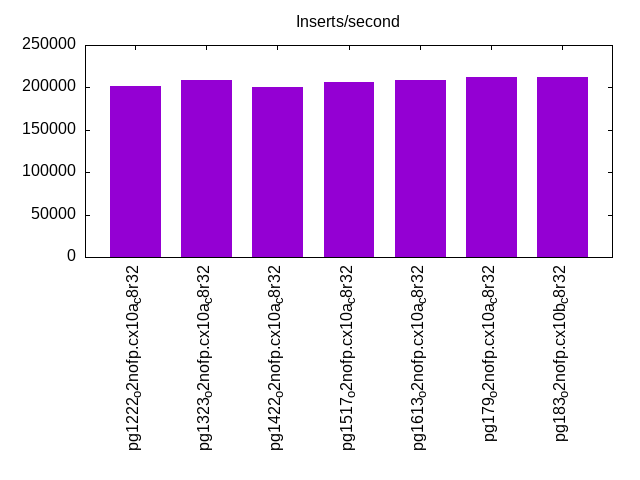
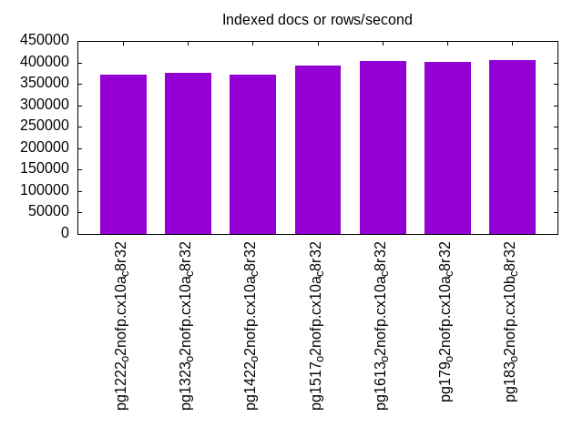
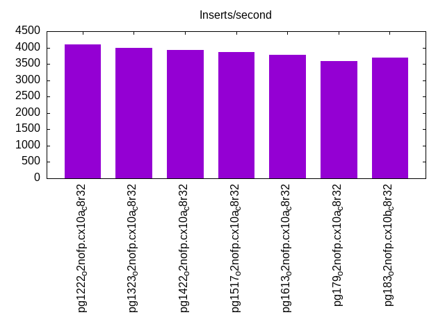
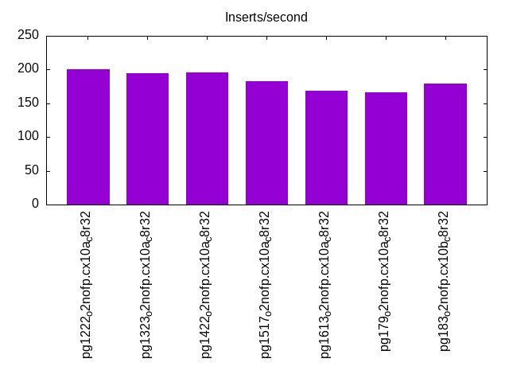
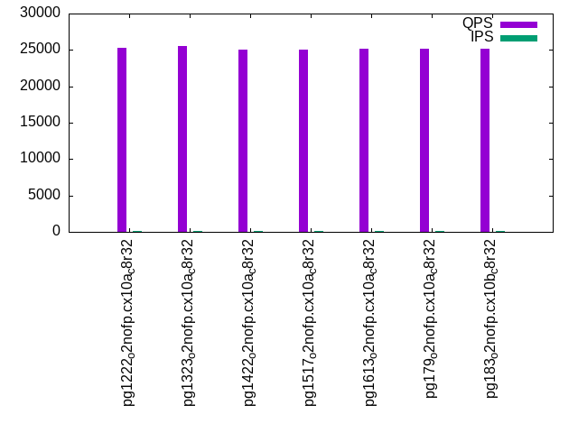
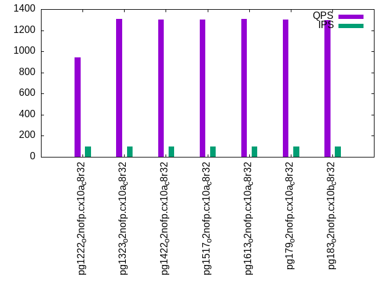
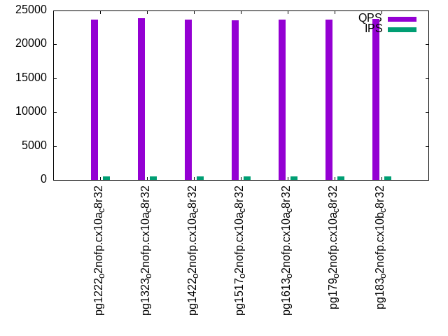
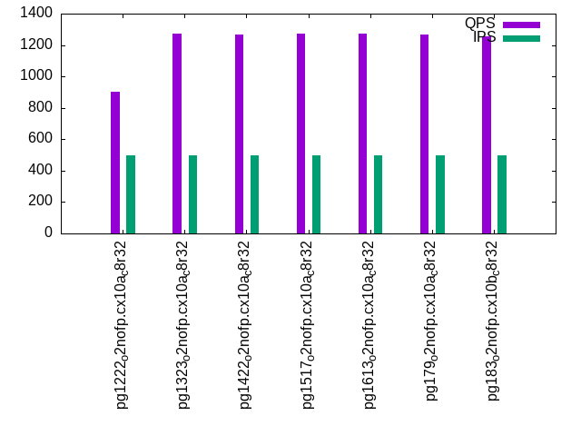
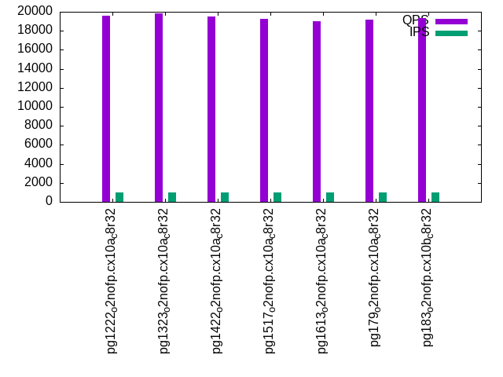
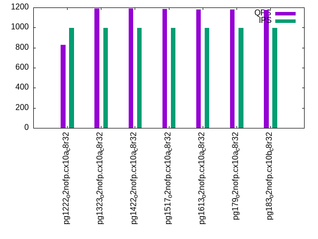

This is a report for the insert benchmark with 800M docs and 1 client(s). It is generated by scripts (bash, awk, sed) and Tufte might not be impressed. An overview of the insert benchmark is here and a short update is here. Below, by DBMS, I mean DBMS+version.config. An example is my8020.c10b40 where my means MySQL, 8020 is version 8.0.20 and c10b40 is the name for the configuration file.
The test server has 8 AMD cores, 32G RAM and an NVMe device for the database. The benchmark was run with 1 client and there were 1 or 3 connections per client (1 for queries or inserts without rate limits, 1+1 for rate limited inserts+deletes). It uses 1 table with a table per client. It loads 800M rows per table without secondary indexes, creates 3 secondary indexes per table, then inserts 4m+1m rows per table with a delete per insert to avoid growing the table. It then does 6 read+write tests for 1800s each that do queries as fast as possible with 100,100,500,500,1000,1000 inserts/s and the same for deletes/s per client concurrent with the queries. The database is IO-bound for most benchmark steps. Clients and the DBMS share one server.
The tested DBMS are:
The numbers are inserts/s for l.i0, l.i1 and l.i2, indexed docs (or rows) /s for l.x and queries/s for qr100, qp100 thru qr1000, qp1000" The values are the average rate over the entire test for inserts (IPS) and queries (QPS). The range of values for IPS and QPS is split into 3 parts: bottom 25%, middle 50%, top 25%. Values in the bottom 25% have a red background, values in the top 25% have a green background and values in the middle have no color. A gray background is used for values that can be ignored because the DBMS did not sustain the target insert rate. Red backgrounds are not used when the minimum value is within 80% of the max value.
| dbms | l.i0 | l.x | l.i1 | l.i2 | qr100 | qp100 | qr500 | qp500 | qr1000 | qp1000 |
|---|---|---|---|---|---|---|---|---|---|---|
| pg1222_o2nofp.cx10a_c8r32 | 201613 | 371402 | 4102 | 201 | 25254 | 942 | 23621 | 905 | 19578 | 829 |
| pg1323_o2nofp.cx10a_c8r32 | 208388 | 375234 | 3980 | 195 | 25489 | 1307 | 23906 | 1271 | 19823 | 1192 |
| pg1422_o2nofp.cx10a_c8r32 | 200501 | 372440 | 3918 | 196 | 25098 | 1304 | 23621 | 1267 | 19500 | 1188 |
| pg1517_o2nofp.cx10a_c8r32 | 206665 | 392157 | 3872 | 183 | 25078 | 1304 | 23505 | 1272 | 19235 | 1185 |
| pg1613_o2nofp.cx10a_c8r32 | 209096 | 402414 | 3781 | 169 | 25139 | 1308 | 23648 | 1273 | 19037 | 1181 |
| pg179_o2nofp.cx10a_c8r32 | 211977 | 400601 | 3597 | 166 | 25204 | 1301 | 23672 | 1265 | 19186 | 1182 |
| pg183_o2nofp.cx10b_c8r32 | 211977 | 404858 | 3697 | 179 | 25187 | 1297 | 23787 | 1257 | 19338 | 1176 |
This table has relative throughput, throughput for the DBMS relative to the DBMS in the first line, using the absolute throughput from the previous table. Values less than 0.95 have a yellow background. Values greater than 1.05 have a blue background.
| dbms | l.i0 | l.x | l.i1 | l.i2 | qr100 | qp100 | qr500 | qp500 | qr1000 | qp1000 |
|---|---|---|---|---|---|---|---|---|---|---|
| pg1222_o2nofp.cx10a_c8r32 | 1.00 | 1.00 | 1.00 | 1.00 | 1.00 | 1.00 | 1.00 | 1.00 | 1.00 | 1.00 |
| pg1323_o2nofp.cx10a_c8r32 | 1.03 | 1.01 | 0.97 | 0.97 | 1.01 | 1.39 | 1.01 | 1.40 | 1.01 | 1.44 |
| pg1422_o2nofp.cx10a_c8r32 | 0.99 | 1.00 | 0.96 | 0.98 | 0.99 | 1.38 | 1.00 | 1.40 | 1.00 | 1.43 |
| pg1517_o2nofp.cx10a_c8r32 | 1.03 | 1.06 | 0.94 | 0.91 | 0.99 | 1.38 | 1.00 | 1.41 | 0.98 | 1.43 |
| pg1613_o2nofp.cx10a_c8r32 | 1.04 | 1.08 | 0.92 | 0.84 | 1.00 | 1.39 | 1.00 | 1.41 | 0.97 | 1.42 |
| pg179_o2nofp.cx10a_c8r32 | 1.05 | 1.08 | 0.88 | 0.83 | 1.00 | 1.38 | 1.00 | 1.40 | 0.98 | 1.43 |
| pg183_o2nofp.cx10b_c8r32 | 1.05 | 1.09 | 0.90 | 0.89 | 1.00 | 1.38 | 1.01 | 1.39 | 0.99 | 1.42 |
This lists the average rate of inserts/s for the tests that do inserts concurrent with queries. For such tests the query rate is listed in the table above. The read+write tests are setup so that the insert rate should match the target rate every second. Cells that are not at least 95% of the target have a red background to indicate a failure to satisfy the target.
| dbms | qr100.L1 | qp100.L2 | qr500.L3 | qp500.L4 | qr1000.L5 | qp1000.L6 |
|---|---|---|---|---|---|---|
| pg1222_o2nofp.cx10a_c8r32 | 100 | 100 | 499 | 499 | 999 | 999 |
| pg1323_o2nofp.cx10a_c8r32 | 100 | 100 | 500 | 500 | 999 | 999 |
| pg1422_o2nofp.cx10a_c8r32 | 100 | 100 | 500 | 500 | 999 | 999 |
| pg1517_o2nofp.cx10a_c8r32 | 100 | 100 | 499 | 499 | 999 | 999 |
| pg1613_o2nofp.cx10a_c8r32 | 100 | 100 | 499 | 500 | 999 | 999 |
| pg179_o2nofp.cx10a_c8r32 | 100 | 100 | 499 | 500 | 999 | 999 |
| pg183_o2nofp.cx10b_c8r32 | 100 | 100 | 500 | 500 | 999 | 999 |
| target | 100 | 100 | 500 | 500 | 1000 | 1000 |
l.i0: load without secondary indexes. Graphs for performance per 1-second interval are here.
Average throughput:

Insert response time histogram: each cell has the percentage of responses that take <= the time in the header and max is the max response time in seconds. For the max column values in the top 25% of the range have a red background and in the bottom 25% of the range have a green background. The red background is not used when the min value is within 80% of the max value.
| dbms | 256us | 1ms | 4ms | 16ms | 64ms | 256ms | 1s | 4s | 16s | gt | max |
|---|---|---|---|---|---|---|---|---|---|---|---|
| pg1222_o2nofp.cx10a_c8r32 | 99.964 | 0.035 | nonzero | nonzero | 0.031 | ||||||
| pg1323_o2nofp.cx10a_c8r32 | 99.966 | 0.031 | 0.002 | nonzero | 0.035 | ||||||
| pg1422_o2nofp.cx10a_c8r32 | 99.956 | 0.036 | 0.007 | 0.001 | 0.032 | ||||||
| pg1517_o2nofp.cx10a_c8r32 | 99.972 | 0.025 | 0.003 | nonzero | 0.038 | ||||||
| pg1613_o2nofp.cx10a_c8r32 | 99.973 | 0.024 | 0.003 | nonzero | 0.038 | ||||||
| pg179_o2nofp.cx10a_c8r32 | 99.975 | 0.022 | 0.003 | 0.001 | 0.045 | ||||||
| pg183_o2nofp.cx10b_c8r32 | 99.974 | 0.022 | 0.005 | nonzero | 0.027 |
Performance metrics for the DBMS listed above. Some are normalized by throughput, others are not. Legend for results is here.
ips qps rps rmbps wps wmbps rpq rkbpq wpi wkbpi csps cpups cspq cpupq dbgb1 dbgb2 rss maxop p50 p99 tag 201613 0 37 0.3 814.7 82.7 0.000 0.001 0.004 0.420 24024 20.3 0.119 8 76.5 116.6 19.2 0.031 202575 196785 pg1222_o2nofp.cx10a_c8r32 208388 0 34 0.3 779.9 85.8 0.000 0.001 0.004 0.422 24767 20.7 0.119 8 76.5 116.6 18.4 0.035 209676 203077 pg1323_o2nofp.cx10a_c8r32 200501 0 37 0.3 752.1 82.8 0.000 0.001 0.004 0.423 23279 20.0 0.116 8 76.5 116.6 2.3 0.032 201674 192279 pg1422_o2nofp.cx10a_c8r32 206665 0 35 0.3 771.4 85.1 0.000 0.001 0.004 0.422 24027 19.8 0.116 8 76.5 116.6 18.7 0.038 208073 200677 pg1517_o2nofp.cx10a_c8r32 209096 0 35 0.3 781.4 86.0 0.000 0.001 0.004 0.421 24291 20.0 0.116 8 76.5 116.6 18.9 0.038 210385 203169 pg1613_o2nofp.cx10a_c8r32 211977 0 40 0.3 790.9 87.2 0.000 0.002 0.004 0.421 21046 20.2 0.099 8 76.5 116.6 18.7 0.045 213369 206172 pg179_o2nofp.cx10a_c8r32 211977 0 36 0.3 798.7 87.8 0.000 0.001 0.004 0.424 21043 20.3 0.099 8 76.5 116.6 18.5 0.027 213363 206161 pg183_o2nofp.cx10b_c8r32
Average values from iostat.
r/s rkB/s rrqm/s %rrqm r_await rareq-s w/s wkB/s wrqm/s %wrqm w_await wareq-s d/s dkB/s drqm/s %drqm d_await dareq-s f/s f_await aqu-sz %util 37.20 300.6 0.043 0.522 0.087 2.932 815.0 84724.9 36.98 3.592 0.301 107.9 2.249 30.38 0.000 0.000 0.690 8.903 42.50 1.513 0.327 11.22 pg1222_o2nofp.cx10a_c8r32 34.31 276.5 0.000 0.000 0.099 2.906 780.2 87885.6 37.96 3.686 0.318 112.5 2.287 20.68 0.000 0.000 0.690 6.179 43.04 1.591 0.328 11.58 pg1323_o2nofp.cx10a_c8r32 37.41 299.0 0.003 0.090 0.158 2.837 752.4 84837.7 35.88 3.853 0.444 112.2 2.296 19.61 0.000 0.000 0.962 5.705 41.47 2.245 0.453 14.19 pg1422_o2nofp.cx10a_c8r32 34.74 277.4 0.028 0.310 0.096 2.709 771.7 87141.1 34.45 3.331 0.310 112.9 0.262 38.56 0.000 0.000 0.165 21.71 42.79 1.513 0.320 11.08 pg1517_o2nofp.cx10a_c8r32 35.49 283.4 0.002 0.079 0.088 2.763 781.7 88096.2 35.17 3.294 0.305 112.8 0.223 51.26 0.000 0.000 0.166 22.13 43.26 1.509 0.322 11.17 pg1613_o2nofp.cx10a_c8r32 40.28 323.5 0.059 0.756 0.092 2.872 791.2 89306.2 32.49 3.227 0.300 112.7 0.125 8.609 0.000 0.000 0.166 5.002 43.78 1.513 0.316 11.01 pg179_o2nofp.cx10a_c8r32 36.59 293.9 0.079 0.962 0.104 2.906 799.0 89940.4 31.32 3.148 0.307 112.5 0.130 13.85 0.000 0.000 0.161 11.42 43.81 1.517 0.324 11.11 pg183_o2nofp.cx10b_c8r32
l.x: create secondary indexes.
Average throughput:

Performance metrics for the DBMS listed above. Some are normalized by throughput, others are not. Legend for results is here.
ips qps rps rmbps wps wmbps rpq rkbpq wpi wkbpi csps cpups cspq cpupq dbgb1 dbgb2 rss maxop p50 p99 tag 371402 0 1031 124.5 1827.4 187.1 0.003 0.343 0.005 0.516 1201 13.5 0.003 3 153.8 193.8 23.4 0.003 NA NA pg1222_o2nofp.cx10a_c8r32 375234 0 1530 139.5 1144.8 137.2 0.004 0.381 0.003 0.374 1470 12.5 0.004 3 153.6 193.7 23.4 0.003 NA NA pg1323_o2nofp.cx10a_c8r32 372440 0 1526 138.7 1131.9 136.0 0.004 0.381 0.003 0.374 1436 12.5 0.004 3 153.6 193.7 23.4 0.005 NA NA pg1422_o2nofp.cx10a_c8r32 392157 0 1670 160.7 1202.5 146.5 0.004 0.420 0.003 0.383 1607 12.7 0.004 3 153.6 193.7 23.4 0.004 NA NA pg1517_o2nofp.cx10a_c8r32 402414 0 1197 140.3 1234.8 150.6 0.003 0.357 0.003 0.383 1026 12.8 0.003 3 153.6 193.7 23.5 0.003 NA NA pg1613_o2nofp.cx10a_c8r32 400601 0 1216 140.8 1229.2 149.8 0.003 0.360 0.003 0.383 1030 12.8 0.003 3 153.6 193.7 23.4 0.002 NA NA pg179_o2nofp.cx10a_c8r32 404858 0 1264 143.9 1240.9 151.0 0.003 0.364 0.003 0.382 1082 12.8 0.003 3 153.6 193.7 23.4 0.007 NA NA pg183_o2nofp.cx10b_c8r32
Average values from iostat.
r/s rkB/s rrqm/s %rrqm r_await rareq-s w/s wkB/s wrqm/s %wrqm w_await wareq-s d/s dkB/s drqm/s %drqm d_await dareq-s f/s f_await aqu-sz %util 1031.2 127482 0.243 0.022 0.113 108.7 1830.3 191834 39.78 6.631 0.311 107.1 2.801 20859.9 0.000 0.000 0.740 374.6 15.68 1.698 0.673 18.68 pg1222_o2nofp.cx10a_c8r32 1531.8 142839 0.000 0.000 0.113 90.97 1147.4 140843 27.27 1.605 0.330 123.4 2.953 24423.5 0.000 0.000 0.753 1620.8 9.967 1.698 0.541 17.80 pg1323_o2nofp.cx10a_c8r32 1526.9 142036 0.000 0.000 0.108 91.14 1134.3 139607 26.59 1.609 0.296 123.5 3.011 20510.6 0.000 0.000 0.730 423.9 9.868 1.732 0.501 17.53 pg1422_o2nofp.cx10a_c8r32 1671.5 164606 0.000 0.000 0.093 96.19 1205.2 150379 23.46 1.166 0.200 125.3 1.005 21661.5 0.000 0.000 0.312 424.6 9.463 1.980 0.514 18.64 pg1517_o2nofp.cx10a_c8r32 1197.3 143680 0.002 0.000 0.106 105.6 1237.6 154589 26.04 1.078 0.201 125.9 1.039 22465.6 0.000 0.000 0.293 463.2 10.21 1.972 0.495 16.96 pg1613_o2nofp.cx10a_c8r32 1215.7 144218 0.000 0.000 0.120 105.4 1231.4 153724 25.56 1.065 0.200 125.6 0.802 25810.2 0.000 0.000 0.285 5666.3 10.07 1.963 0.516 16.80 pg179_o2nofp.cx10a_c8r32 1263.9 147399 0.000 0.000 0.128 104.6 1243.7 154967 26.05 1.079 0.202 125.4 0.895 28091.0 0.000 0.000 0.311 6458.3 10.20 1.803 0.530 17.38 pg183_o2nofp.cx10b_c8r32
l.i1: continue load after secondary indexes created with 50 inserts per transaction. Graphs for performance per 1-second interval are here.
Average throughput:

Insert response time histogram: each cell has the percentage of responses that take <= the time in the header and max is the max response time in seconds. For the max column values in the top 25% of the range have a red background and in the bottom 25% of the range have a green background. The red background is not used when the min value is within 80% of the max value.
| dbms | 256us | 1ms | 4ms | 16ms | 64ms | 256ms | 1s | 4s | 16s | gt | max |
|---|---|---|---|---|---|---|---|---|---|---|---|
| pg1222_o2nofp.cx10a_c8r32 | 3.033 | 96.707 | 0.260 | 0.051 | |||||||
| pg1323_o2nofp.cx10a_c8r32 | 0.060 | 99.849 | 0.091 | 0.037 | |||||||
| pg1422_o2nofp.cx10a_c8r32 | 0.007 | 99.771 | 0.217 | 0.004 | 0.137 | ||||||
| pg1517_o2nofp.cx10a_c8r32 | 0.028 | 99.880 | 0.092 | 0.048 | |||||||
| pg1613_o2nofp.cx10a_c8r32 | 0.013 | 99.922 | 0.065 | 0.027 | |||||||
| pg179_o2nofp.cx10a_c8r32 | 0.014 | 99.956 | 0.030 | 0.042 | |||||||
| pg183_o2nofp.cx10b_c8r32 | 0.009 | 99.961 | 0.030 | 0.035 |
Delete response time histogram: each cell has the percentage of responses that take <= the time in the header and max is the max response time in seconds. For the max column values in the top 25% of the range have a red background and in the bottom 25% of the range have a green background. The red background is not used when the min value is within 80% of the max value.
| dbms | 256us | 1ms | 4ms | 16ms | 64ms | 256ms | 1s | 4s | 16s | gt | max |
|---|---|---|---|---|---|---|---|---|---|---|---|
| pg1222_o2nofp.cx10a_c8r32 | 1.460 | 19.736 | 51.344 | 27.460 | 0.030 | ||||||
| pg1323_o2nofp.cx10a_c8r32 | 1.060 | 18.164 | 48.874 | 31.902 | 0.030 | ||||||
| pg1422_o2nofp.cx10a_c8r32 | 0.004 | 1.159 | 18.918 | 47.649 | 32.269 | 0.003 | 0.068 | ||||
| pg1517_o2nofp.cx10a_c8r32 | 1.664 | 17.649 | 47.499 | 33.189 | 0.031 | ||||||
| pg1613_o2nofp.cx10a_c8r32 | 0.005 | 1.836 | 17.056 | 46.109 | 34.994 | 0.029 | |||||
| pg179_o2nofp.cx10a_c8r32 | 1.731 | 17.095 | 41.546 | 39.627 | 0.034 | ||||||
| pg183_o2nofp.cx10b_c8r32 | 1.404 | 17.872 | 42.771 | 37.953 | 0.031 |
Performance metrics for the DBMS listed above. Some are normalized by throughput, others are not. Legend for results is here.
ips qps rps rmbps wps wmbps rpq rkbpq wpi wkbpi csps cpups cspq cpupq dbgb1 dbgb2 rss maxop p50 p99 tag 4102 0 5222 41.2 4796.1 85.9 1.273 10.280 1.169 21.452 12679 16.1 3.091 314 154.4 194.5 23.3 0.051 3350 2100 pg1222_o2nofp.cx10a_c8r32 3980 0 5741 45.2 4686.9 80.4 1.442 11.637 1.178 20.694 13608 16.2 3.419 326 154.3 194.3 22.9 0.037 3149 2150 pg1323_o2nofp.cx10a_c8r32 3918 0 5634 44.4 4757.6 87.0 1.438 11.607 1.214 22.741 12958 16.0 3.308 327 154.3 194.3 23.1 0.137 3198 2050 pg1422_o2nofp.cx10a_c8r32 3872 0 5594 44.1 4574.8 78.5 1.445 11.656 1.181 20.746 12716 15.8 3.284 326 154.3 194.3 22.9 0.048 3049 2050 pg1517_o2nofp.cx10a_c8r32 3781 0 5440 42.9 4491.9 77.3 1.439 11.609 1.188 20.929 12382 15.6 3.275 330 154.3 194.3 21.7 0.027 2900 1949 pg1613_o2nofp.cx10a_c8r32 3597 0 5163 40.7 4234.3 72.9 1.435 11.581 1.177 20.765 11599 15.4 3.224 343 154.3 194.3 22.7 0.042 2748 1899 pg179_o2nofp.cx10a_c8r32 3697 0 5313 41.9 4387.0 75.2 1.437 11.596 1.187 20.828 11925 15.5 3.226 335 154.3 194.3 22.8 0.035 2850 2000 pg183_o2nofp.cx10b_c8r32
Average values from iostat.
r/s rkB/s rrqm/s %rrqm r_await rareq-s w/s wkB/s wrqm/s %wrqm w_await wareq-s d/s dkB/s drqm/s %drqm d_await dareq-s f/s f_await aqu-sz %util 5205.2 42034.1 0.000 0.000 0.043 8.078 4817.8 88250.9 26.57 1.309 0.135 39.67 2.009 9.940 0.000 0.000 0.539 4.907 43.72 1.533 0.738 33.31 pg1222_o2nofp.cx10a_c8r32 5701.1 45996.8 0.000 0.000 0.043 8.072 4707.3 82429.3 21.42 1.087 0.144 40.21 2.020 9.784 0.000 0.000 0.532 4.834 42.25 1.565 0.869 34.34 pg1323_o2nofp.cx10a_c8r32 5592.5 45138.6 0.000 0.000 0.044 8.075 4777.9 89179.7 31.03 1.789 0.179 41.75 2.035 107.1 0.000 0.000 0.561 28.09 46.02 1.594 1.039 35.98 pg1422_o2nofp.cx10a_c8r32 5553.6 44809.8 0.000 0.000 0.043 8.072 4594.1 80383.4 18.13 0.892 0.149 40.33 0.037 0.222 0.000 0.000 0.110 0.748 41.20 1.601 0.862 34.07 pg1517_o2nofp.cx10a_c8r32 5397.2 43548.2 0.000 0.000 0.043 8.072 4510.2 79153.2 23.30 0.863 0.140 38.65 0.009 0.130 0.000 0.000 0.036 0.419 40.33 1.585 0.907 33.27 pg1613_o2nofp.cx10a_c8r32 5122.8 41335.5 0.000 0.000 0.042 8.073 4250.5 74705.4 14.31 0.594 0.127 38.06 0.033 0.206 0.000 0.000 0.152 0.796 37.77 1.566 0.786 31.02 pg179_o2nofp.cx10a_c8r32 5273.1 42545.7 0.000 0.000 0.042 8.073 4404.5 77027.3 15.48 0.803 0.136 38.94 0.011 0.119 0.000 0.000 0.026 0.353 38.72 1.581 0.785 31.89 pg183_o2nofp.cx10b_c8r32
l.i2: continue load after secondary indexes created with 5 inserts per transaction. Graphs for performance per 1-second interval are here.
Average throughput:

Insert response time histogram: each cell has the percentage of responses that take <= the time in the header and max is the max response time in seconds. For the max column values in the top 25% of the range have a red background and in the bottom 25% of the range have a green background. The red background is not used when the min value is within 80% of the max value.
| dbms | 256us | 1ms | 4ms | 16ms | 64ms | 256ms | 1s | 4s | 16s | gt | max |
|---|---|---|---|---|---|---|---|---|---|---|---|
| pg1222_o2nofp.cx10a_c8r32 | 40.400 | 59.458 | 0.142 | 0.013 | |||||||
| pg1323_o2nofp.cx10a_c8r32 | 42.023 | 57.824 | 0.153 | 0.001 | 0.016 | ||||||
| pg1422_o2nofp.cx10a_c8r32 | 43.394 | 56.400 | 0.206 | 0.001 | 0.017 | ||||||
| pg1517_o2nofp.cx10a_c8r32 | 39.364 | 60.453 | 0.182 | 0.015 | |||||||
| pg1613_o2nofp.cx10a_c8r32 | 37.726 | 62.098 | 0.176 | 0.001 | 0.020 | ||||||
| pg179_o2nofp.cx10a_c8r32 | 44.556 | 55.355 | 0.088 | 0.016 | |||||||
| pg183_o2nofp.cx10b_c8r32 | 48.296 | 51.641 | 0.063 | 0.011 |
Delete response time histogram: each cell has the percentage of responses that take <= the time in the header and max is the max response time in seconds. For the max column values in the top 25% of the range have a red background and in the bottom 25% of the range have a green background. The red background is not used when the min value is within 80% of the max value.
| dbms | 256us | 1ms | 4ms | 16ms | 64ms | 256ms | 1s | 4s | 16s | gt | max |
|---|---|---|---|---|---|---|---|---|---|---|---|
| pg1222_o2nofp.cx10a_c8r32 | 99.999 | 0.001 | 0.081 | ||||||||
| pg1323_o2nofp.cx10a_c8r32 | 99.999 | 0.001 | 0.083 | ||||||||
| pg1422_o2nofp.cx10a_c8r32 | 99.999 | 0.001 | 0.083 | ||||||||
| pg1517_o2nofp.cx10a_c8r32 | 99.999 | 0.001 | 0.082 | ||||||||
| pg1613_o2nofp.cx10a_c8r32 | 99.999 | 0.001 | 0.081 | ||||||||
| pg179_o2nofp.cx10a_c8r32 | 99.999 | 0.001 | 0.078 | ||||||||
| pg183_o2nofp.cx10b_c8r32 | 99.999 | 0.001 | 0.079 |
Performance metrics for the DBMS listed above. Some are normalized by throughput, others are not. Legend for results is here.
ips qps rps rmbps wps wmbps rpq rkbpq wpi wkbpi csps cpups cspq cpupq dbgb1 dbgb2 rss maxop p50 p99 tag 201 0 215 1.7 487.7 6.8 1.072 8.606 2.431 34.821 1858 13.4 9.264 5344 154.6 194.6 23.3 0.013 200 180 pg1222_o2nofp.cx10a_c8r32 195 0 209 1.7 565.0 7.6 1.073 8.687 2.896 40.095 1804 13.4 9.245 5495 154.4 194.5 23.0 0.016 195 175 pg1323_o2nofp.cx10a_c8r32 196 0 210 1.7 561.1 7.9 1.072 8.685 2.861 41.245 1503 13.2 7.665 5385 154.4 194.5 23.3 0.017 195 175 pg1422_o2nofp.cx10a_c8r32 183 0 196 1.5 529.2 7.3 1.071 8.679 2.896 40.733 1353 13.0 7.408 5692 154.4 194.5 22.9 0.015 180 165 pg1517_o2nofp.cx10a_c8r32 169 0 181 1.4 489.2 6.8 1.070 8.671 2.898 41.358 1260 12.9 7.465 6114 154.4 194.5 22.9 0.020 165 150 pg1613_o2nofp.cx10a_c8r32 166 0 178 1.4 499.3 6.8 1.069 8.661 2.999 41.815 1078 12.7 6.477 6102 154.4 194.5 22.8 0.016 165 150 pg179_o2nofp.cx10a_c8r32 179 0 191 1.5 513.6 7.1 1.071 8.674 2.874 40.889 1179 12.8 6.597 5730 154.4 194.5 22.8 0.011 175 160 pg183_o2nofp.cx10b_c8r32
Average values from iostat.
r/s rkB/s rrqm/s %rrqm r_await rareq-s w/s wkB/s wrqm/s %wrqm w_await wareq-s d/s dkB/s drqm/s %drqm d_await dareq-s f/s f_await aqu-sz %util 214.9 1726.1 0.000 0.000 0.075 8.032 487.5 6984.0 9.535 2.489 0.064 16.93 2.007 9.767 0.000 0.000 0.427 4.827 6.018 1.566 0.051 3.023 pg1222_o2nofp.cx10a_c8r32 209.2 1694.6 0.000 0.000 0.074 8.100 565.5 7827.4 7.433 2.381 0.084 19.46 2.008 9.838 0.000 0.000 0.435 4.840 6.476 1.564 0.055 3.148 pg1323_o2nofp.cx10a_c8r32 210.2 1702.9 0.000 0.000 0.077 8.103 561.4 8090.2 6.506 1.812 0.068 17.90 2.008 10.17 0.000 0.000 0.436 5.022 5.975 1.573 0.054 3.247 pg1422_o2nofp.cx10a_c8r32 195.7 1585.5 0.000 0.000 0.076 8.102 529.6 7446.2 5.347 1.662 0.087 19.93 0.019 0.293 0.000 0.000 0.037 0.321 6.430 1.578 0.053 3.128 pg1517_o2nofp.cx10a_c8r32 180.6 1463.4 0.000 0.000 0.078 8.102 489.6 6985.5 6.505 2.026 0.082 19.27 0.008 0.189 0.000 0.000 0.005 0.096 6.191 1.563 0.051 2.931 pg1613_o2nofp.cx10a_c8r32 178.0 1441.9 0.000 0.000 0.056 8.101 499.4 6964.1 4.325 1.120 0.078 17.39 0.006 0.107 0.000 0.000 0.021 0.400 6.202 1.583 0.049 2.812 pg179_o2nofp.cx10a_c8r32 191.3 1549.8 0.000 0.000 0.055 8.101 514.0 7311.7 5.826 1.730 0.086 19.74 0.002 0.157 0.000 0.000 0.003 0.324 6.286 1.587 0.049 2.783 pg183_o2nofp.cx10b_c8r32
qr100.L1: range queries with 100 insert/s per client. Graphs for performance per 1-second interval are here.
Average throughput:

Query response time histogram: each cell has the percentage of responses that take <= the time in the header and max is the max response time in seconds. For max values in the top 25% of the range have a red background and in the bottom 25% of the range have a green background. The red background is not used when the min value is within 80% of the max value.
| dbms | 256us | 1ms | 4ms | 16ms | 64ms | 256ms | 1s | 4s | 16s | gt | max |
|---|---|---|---|---|---|---|---|---|---|---|---|
| pg1222_o2nofp.cx10a_c8r32 | 99.994 | 0.006 | nonzero | nonzero | 0.005 | ||||||
| pg1323_o2nofp.cx10a_c8r32 | 99.993 | 0.007 | nonzero | nonzero | 0.005 | ||||||
| pg1422_o2nofp.cx10a_c8r32 | 99.993 | 0.007 | nonzero | nonzero | 0.004 | ||||||
| pg1517_o2nofp.cx10a_c8r32 | 99.992 | 0.008 | nonzero | nonzero | 0.011 | ||||||
| pg1613_o2nofp.cx10a_c8r32 | 99.992 | 0.008 | nonzero | nonzero | 0.010 | ||||||
| pg179_o2nofp.cx10a_c8r32 | 99.992 | 0.008 | nonzero | nonzero | 0.009 | ||||||
| pg183_o2nofp.cx10b_c8r32 | 99.992 | 0.008 | nonzero | nonzero | 0.010 |
Insert response time histogram: each cell has the percentage of responses that take <= the time in the header and max is the max response time in seconds. For max values in the top 25% of the range have a red background and in the bottom 25% of the range have a green background. The red background is not used when the min value is within 80% of the max value.
| dbms | 256us | 1ms | 4ms | 16ms | 64ms | 256ms | 1s | 4s | 16s | gt | max |
|---|---|---|---|---|---|---|---|---|---|---|---|
| pg1222_o2nofp.cx10a_c8r32 | 99.750 | 0.250 | 0.019 | ||||||||
| pg1323_o2nofp.cx10a_c8r32 | 8.806 | 91.167 | 0.028 | 0.016 | |||||||
| pg1422_o2nofp.cx10a_c8r32 | 9.083 | 90.889 | 0.028 | 0.018 | |||||||
| pg1517_o2nofp.cx10a_c8r32 | 9.000 | 90.972 | 0.028 | 0.021 | |||||||
| pg1613_o2nofp.cx10a_c8r32 | 9.861 | 90.111 | 0.028 | 0.022 | |||||||
| pg179_o2nofp.cx10a_c8r32 | 11.500 | 88.472 | 0.028 | 0.020 | |||||||
| pg183_o2nofp.cx10b_c8r32 | 15.778 | 84.194 | 0.028 | 0.020 |
Delete response time histogram: each cell has the percentage of responses that take <= the time in the header and max is the max response time in seconds. For max values in the top 25% of the range have a red background and in the bottom 25% of the range have a green background. The red background is not used when the min value is within 80% of the max value.
| dbms | 256us | 1ms | 4ms | 16ms | 64ms | 256ms | 1s | 4s | 16s | gt | max |
|---|---|---|---|---|---|---|---|---|---|---|---|
| pg1222_o2nofp.cx10a_c8r32 | 62.083 | 37.917 | 0.003 | ||||||||
| pg1323_o2nofp.cx10a_c8r32 | 59.472 | 40.528 | 0.003 | ||||||||
| pg1422_o2nofp.cx10a_c8r32 | 60.167 | 39.833 | 0.004 | ||||||||
| pg1517_o2nofp.cx10a_c8r32 | 58.667 | 41.333 | 0.003 | ||||||||
| pg1613_o2nofp.cx10a_c8r32 | 59.083 | 40.917 | 0.003 | ||||||||
| pg179_o2nofp.cx10a_c8r32 | 0.028 | 59.306 | 40.667 | 0.003 | |||||||
| pg183_o2nofp.cx10b_c8r32 | 0.028 | 58.861 | 41.111 | 0.003 |
Performance metrics for the DBMS listed above. Some are normalized by throughput, others are not. Legend for results is here.
ips qps rps rmbps wps wmbps rpq rkbpq wpi wkbpi csps cpups cspq cpupq dbgb1 dbgb2 rss maxop p50 p99 tag 100 25254 112 0.9 24.4 1.5 0.004 0.036 0.245 15.682 96694 8.6 3.829 27 154.6 194.7 23.4 0.005 25180 24796 pg1222_o2nofp.cx10a_c8r32 100 25489 112 0.9 58.3 1.8 0.004 0.036 0.585 18.632 97647 8.6 3.831 27 154.4 192.0 23.4 0.005 25641 24924 pg1323_o2nofp.cx10a_c8r32 100 25098 111 0.9 63.6 1.9 0.004 0.036 0.637 19.072 96087 8.6 3.828 27 154.5 192.4 23.3 0.004 25003 24667 pg1422_o2nofp.cx10a_c8r32 100 25078 111 0.9 61.6 1.8 0.004 0.037 0.617 18.883 95970 8.8 3.827 28 154.4 191.9 23.3 0.011 25067 24727 pg1517_o2nofp.cx10a_c8r32 100 25139 112 0.9 61.4 1.8 0.004 0.037 0.615 18.885 96209 8.6 3.827 27 154.4 192.1 23.3 0.010 25099 24877 pg1613_o2nofp.cx10a_c8r32 100 25204 113 0.9 67.5 1.9 0.004 0.037 0.677 19.522 96444 8.6 3.827 27 154.4 192.8 23.4 0.009 25132 24829 pg179_o2nofp.cx10a_c8r32 100 25187 111 0.9 68.6 1.9 0.004 0.036 0.687 19.605 96380 8.9 3.827 28 154.4 192.3 23.4 0.010 25084 24697 pg183_o2nofp.cx10b_c8r32
Average values from iostat.
r/s rkB/s rrqm/s %rrqm r_await rareq-s w/s wkB/s wrqm/s %wrqm w_await wareq-s d/s dkB/s drqm/s %drqm d_await dareq-s f/s f_await aqu-sz %util 109.1 878.4 0.000 0.000 0.101 8.048 24.45 1566.4 5.115 17.30 0.696 65.97 2.000 9.597 0.000 0.000 0.948 4.799 3.638 2.023 0.037 2.143 pg1222_o2nofp.cx10a_c8r32 108.4 884.0 0.000 0.000 0.077 8.159 58.43 1860.0 4.094 12.15 0.750 56.79 1.997 9.586 0.000 0.000 0.890 4.808 3.696 1.837 0.067 1.963 pg1323_o2nofp.cx10a_c8r32 107.9 881.1 0.000 0.000 0.077 8.164 63.69 1904.1 4.113 11.60 0.769 54.89 2.001 10.01 0.000 0.000 0.764 5.001 3.650 1.746 0.076 1.912 pg1422_o2nofp.cx10a_c8r32 108.1 895.2 0.000 0.000 0.077 8.281 61.71 1885.1 1.789 5.871 0.874 59.57 0.001 0.002 0.000 0.000 0.003 0.011 3.583 1.848 0.081 1.851 pg1517_o2nofp.cx10a_c8r32 108.6 896.3 0.000 0.000 0.076 8.255 61.47 1885.4 2.095 6.563 0.828 59.81 0.001 0.002 0.000 0.000 0.003 0.011 3.577 1.786 0.076 1.790 pg1613_o2nofp.cx10a_c8r32 109.5 897.5 0.000 0.000 0.057 8.192 67.67 1949.2 1.521 4.898 0.853 60.06 0.001 0.002 0.000 0.000 0.003 0.011 2.617 1.738 0.083 1.695 pg179_o2nofp.cx10a_c8r32 107.7 880.6 0.000 0.000 0.058 8.176 68.72 1957.5 1.876 5.562 0.881 58.40 0.001 0.002 0.000 0.000 0.000 0.011 2.679 1.792 0.084 1.737 pg183_o2nofp.cx10b_c8r32
qp100.L2: point queries with 100 insert/s per client. Graphs for performance per 1-second interval are here.
Average throughput:

Query response time histogram: each cell has the percentage of responses that take <= the time in the header and max is the max response time in seconds. For max values in the top 25% of the range have a red background and in the bottom 25% of the range have a green background. The red background is not used when the min value is within 80% of the max value.
| dbms | 256us | 1ms | 4ms | 16ms | 64ms | 256ms | 1s | 4s | 16s | gt | max |
|---|---|---|---|---|---|---|---|---|---|---|---|
| pg1222_o2nofp.cx10a_c8r32 | nonzero | 44.205 | 55.757 | 0.038 | nonzero | 0.028 | |||||
| pg1323_o2nofp.cx10a_c8r32 | 0.002 | 95.029 | 4.954 | 0.015 | 0.015 | ||||||
| pg1422_o2nofp.cx10a_c8r32 | 0.002 | 94.905 | 5.080 | 0.013 | 0.013 | ||||||
| pg1517_o2nofp.cx10a_c8r32 | 0.002 | 95.079 | 4.903 | 0.017 | 0.015 | ||||||
| pg1613_o2nofp.cx10a_c8r32 | 0.003 | 95.152 | 4.835 | 0.011 | 0.013 | ||||||
| pg179_o2nofp.cx10a_c8r32 | 0.002 | 94.949 | 5.039 | 0.010 | 0.012 | ||||||
| pg183_o2nofp.cx10b_c8r32 | 0.002 | 94.792 | 5.194 | 0.012 | 0.014 |
Insert response time histogram: each cell has the percentage of responses that take <= the time in the header and max is the max response time in seconds. For max values in the top 25% of the range have a red background and in the bottom 25% of the range have a green background. The red background is not used when the min value is within 80% of the max value.
| dbms | 256us | 1ms | 4ms | 16ms | 64ms | 256ms | 1s | 4s | 16s | gt | max |
|---|---|---|---|---|---|---|---|---|---|---|---|
| pg1222_o2nofp.cx10a_c8r32 | 99.750 | 0.250 | 0.024 | ||||||||
| pg1323_o2nofp.cx10a_c8r32 | 99.833 | 0.167 | 0.021 | ||||||||
| pg1422_o2nofp.cx10a_c8r32 | 99.806 | 0.194 | 0.021 | ||||||||
| pg1517_o2nofp.cx10a_c8r32 | 99.750 | 0.250 | 0.021 | ||||||||
| pg1613_o2nofp.cx10a_c8r32 | 99.833 | 0.167 | 0.018 | ||||||||
| pg179_o2nofp.cx10a_c8r32 | 100.000 | 0.012 | |||||||||
| pg183_o2nofp.cx10b_c8r32 | 100.000 | 0.015 |
Delete response time histogram: each cell has the percentage of responses that take <= the time in the header and max is the max response time in seconds. For max values in the top 25% of the range have a red background and in the bottom 25% of the range have a green background. The red background is not used when the min value is within 80% of the max value.
| dbms | 256us | 1ms | 4ms | 16ms | 64ms | 256ms | 1s | 4s | 16s | gt | max |
|---|---|---|---|---|---|---|---|---|---|---|---|
| pg1222_o2nofp.cx10a_c8r32 | 19.139 | 80.806 | 0.056 | 0.007 | |||||||
| pg1323_o2nofp.cx10a_c8r32 | 6.806 | 93.056 | 0.139 | 0.007 | |||||||
| pg1422_o2nofp.cx10a_c8r32 | 6.611 | 93.250 | 0.139 | 0.008 | |||||||
| pg1517_o2nofp.cx10a_c8r32 | 7.889 | 91.917 | 0.194 | 0.008 | |||||||
| pg1613_o2nofp.cx10a_c8r32 | 7.528 | 92.444 | 0.028 | 0.007 | |||||||
| pg179_o2nofp.cx10a_c8r32 | 5.778 | 94.194 | 0.028 | 0.007 | |||||||
| pg183_o2nofp.cx10b_c8r32 | 5.139 | 94.833 | 0.028 | 0.008 |
Performance metrics for the DBMS listed above. Some are normalized by throughput, others are not. Legend for results is here.
ips qps rps rmbps wps wmbps rpq rkbpq wpi wkbpi csps cpups cspq cpupq dbgb1 dbgb2 rss maxop p50 p99 tag 100 942 11839 92.7 405.8 4.5 12.563 100.683 4.062 46.377 26534 3.0 28.155 255 154.6 193.6 23.4 0.028 976 576 pg1222_o2nofp.cx10a_c8r32 100 1307 16162 126.3 374.9 4.3 12.368 99.005 3.753 43.833 36147 3.4 27.661 208 154.5 192.0 23.4 0.015 1344 815 pg1323_o2nofp.cx10a_c8r32 100 1304 16145 126.2 369.5 4.2 12.379 99.099 3.702 43.437 36009 3.7 27.610 227 154.5 192.4 23.3 0.013 1344 784 pg1422_o2nofp.cx10a_c8r32 100 1304 16147 126.2 367.3 4.2 12.379 99.102 3.680 43.228 35963 3.2 27.571 196 154.5 191.9 23.3 0.015 1344 816 pg1517_o2nofp.cx10a_c8r32 100 1308 16189 126.6 367.7 4.2 12.376 99.076 3.684 43.314 36058 3.2 27.565 196 154.5 192.1 23.3 0.013 1344 800 pg1613_o2nofp.cx10a_c8r32 100 1301 16100 125.9 358.8 4.2 12.379 99.096 3.596 42.606 35845 3.3 27.561 203 154.5 192.8 23.4 0.012 1328 800 pg179_o2nofp.cx10a_c8r32 100 1297 16052 125.5 358.4 4.2 12.378 99.080 3.591 42.633 35740 3.5 27.560 216 154.5 192.3 23.4 0.014 1328 784 pg183_o2nofp.cx10b_c8r32
Average values from iostat.
r/s rkB/s rrqm/s %rrqm r_await rareq-s w/s wkB/s wrqm/s %wrqm w_await wareq-s d/s dkB/s drqm/s %drqm d_await dareq-s f/s f_await aqu-sz %util 11840.5 94896.7 0.000 0.000 0.060 8.014 404.5 4622.8 9.131 3.726 0.067 14.06 2.042 648.5 0.000 0.000 0.622 65.15 4.171 1.624 0.778 79.10 pg1222_o2nofp.cx10a_c8r32 16165.5 129405 0.000 0.000 0.040 8.005 373.5 4367.9 5.710 2.257 0.065 13.73 2.001 9.600 0.000 0.000 0.482 4.799 4.310 1.662 0.695 73.49 pg1323_o2nofp.cx10a_c8r32 16148.5 129271 0.000 0.000 0.040 8.005 368.2 4324.9 5.410 2.161 0.066 13.73 2.001 10.01 0.000 0.000 0.468 5.003 4.307 1.750 0.698 73.32 pg1422_o2nofp.cx10a_c8r32 16150.4 129295 0.000 0.000 0.040 8.006 366.0 4303.7 3.122 1.275 0.072 13.79 0.002 9.130 0.000 0.000 0.001 22.83 4.321 1.789 0.696 73.94 pg1517_o2nofp.cx10a_c8r32 16192.3 129629 0.000 0.000 0.040 8.006 366.3 4312.3 4.350 1.760 0.072 13.82 0.001 0.002 0.000 0.000 0.000 0.011 4.312 1.739 0.696 73.52 pg1613_o2nofp.cx10a_c8r32 16101.7 128899 0.000 0.000 0.040 8.005 357.6 4242.8 2.619 1.053 0.060 13.84 0.001 0.007 0.000 0.000 0.006 0.033 3.712 1.750 0.689 73.98 pg179_o2nofp.cx10a_c8r32 16054.7 128509 0.000 0.000 0.040 8.004 357.2 4245.2 4.404 1.803 0.066 13.92 0.001 0.002 0.000 0.000 0.000 0.011 3.725 1.760 0.686 73.42 pg183_o2nofp.cx10b_c8r32
qr500.L3: range queries with 500 insert/s per client. Graphs for performance per 1-second interval are here.
Average throughput:

Query response time histogram: each cell has the percentage of responses that take <= the time in the header and max is the max response time in seconds. For max values in the top 25% of the range have a red background and in the bottom 25% of the range have a green background. The red background is not used when the min value is within 80% of the max value.
| dbms | 256us | 1ms | 4ms | 16ms | 64ms | 256ms | 1s | 4s | 16s | gt | max |
|---|---|---|---|---|---|---|---|---|---|---|---|
| pg1222_o2nofp.cx10a_c8r32 | 99.987 | 0.012 | 0.001 | nonzero | 0.005 | ||||||
| pg1323_o2nofp.cx10a_c8r32 | 99.987 | 0.012 | nonzero | nonzero | nonzero | 0.026 | |||||
| pg1422_o2nofp.cx10a_c8r32 | 99.988 | 0.012 | nonzero | nonzero | nonzero | 0.022 | |||||
| pg1517_o2nofp.cx10a_c8r32 | 99.985 | 0.014 | nonzero | nonzero | nonzero | 0.025 | |||||
| pg1613_o2nofp.cx10a_c8r32 | 99.986 | 0.013 | nonzero | nonzero | nonzero | 0.024 | |||||
| pg179_o2nofp.cx10a_c8r32 | 99.986 | 0.013 | 0.001 | nonzero | nonzero | 0.022 | |||||
| pg183_o2nofp.cx10b_c8r32 | 99.987 | 0.012 | nonzero | nonzero | nonzero | 0.022 |
Insert response time histogram: each cell has the percentage of responses that take <= the time in the header and max is the max response time in seconds. For max values in the top 25% of the range have a red background and in the bottom 25% of the range have a green background. The red background is not used when the min value is within 80% of the max value.
| dbms | 256us | 1ms | 4ms | 16ms | 64ms | 256ms | 1s | 4s | 16s | gt | max |
|---|---|---|---|---|---|---|---|---|---|---|---|
| pg1222_o2nofp.cx10a_c8r32 | 99.861 | 0.139 | 0.032 | ||||||||
| pg1323_o2nofp.cx10a_c8r32 | 99.939 | 0.061 | 0.018 | ||||||||
| pg1422_o2nofp.cx10a_c8r32 | 99.883 | 0.117 | 0.029 | ||||||||
| pg1517_o2nofp.cx10a_c8r32 | 99.967 | 0.033 | 0.017 | ||||||||
| pg1613_o2nofp.cx10a_c8r32 | 99.939 | 0.061 | 0.017 | ||||||||
| pg179_o2nofp.cx10a_c8r32 | 99.961 | 0.039 | 0.018 | ||||||||
| pg183_o2nofp.cx10b_c8r32 | 99.967 | 0.033 | 0.021 |
Delete response time histogram: each cell has the percentage of responses that take <= the time in the header and max is the max response time in seconds. For max values in the top 25% of the range have a red background and in the bottom 25% of the range have a green background. The red background is not used when the min value is within 80% of the max value.
| dbms | 256us | 1ms | 4ms | 16ms | 64ms | 256ms | 1s | 4s | 16s | gt | max |
|---|---|---|---|---|---|---|---|---|---|---|---|
| pg1222_o2nofp.cx10a_c8r32 | 59.078 | 40.922 | 0.013 | ||||||||
| pg1323_o2nofp.cx10a_c8r32 | 52.594 | 47.406 | 0.012 | ||||||||
| pg1422_o2nofp.cx10a_c8r32 | 50.978 | 49.022 | 0.013 | ||||||||
| pg1517_o2nofp.cx10a_c8r32 | 49.178 | 50.822 | 0.012 | ||||||||
| pg1613_o2nofp.cx10a_c8r32 | 50.672 | 49.328 | 0.012 | ||||||||
| pg179_o2nofp.cx10a_c8r32 | 50.667 | 49.333 | 0.012 | ||||||||
| pg183_o2nofp.cx10b_c8r32 | 51.389 | 48.611 | 0.012 |
Performance metrics for the DBMS listed above. Some are normalized by throughput, others are not. Legend for results is here.
ips qps rps rmbps wps wmbps rpq rkbpq wpi wkbpi csps cpups cspq cpupq dbgb1 dbgb2 rss maxop p50 p99 tag 499 23621 872 6.9 193.0 7.6 0.037 0.299 0.386 15.622 92190 9.8 3.903 33 154.7 191.1 23.4 0.005 23674 22349 pg1222_o2nofp.cx10a_c8r32 500 23906 877 7.0 303.1 8.9 0.037 0.298 0.607 18.199 93225 9.9 3.900 33 154.5 190.3 23.4 0.026 23933 22876 pg1323_o2nofp.cx10a_c8r32 500 23621 878 7.0 320.2 9.1 0.037 0.302 0.641 18.580 92037 9.8 3.896 33 154.5 190.3 23.3 0.022 23688 22669 pg1422_o2nofp.cx10a_c8r32 499 23505 878 7.0 319.1 9.1 0.037 0.304 0.639 18.583 91604 9.9 3.897 34 154.5 190.3 23.3 0.025 23613 22254 pg1517_o2nofp.cx10a_c8r32 499 23648 878 7.0 316.6 9.0 0.037 0.302 0.634 18.537 92150 9.8 3.897 33 154.5 190.3 23.3 0.024 23741 22653 pg1613_o2nofp.cx10a_c8r32 499 23672 878 7.0 342.4 9.3 0.037 0.302 0.686 19.081 92209 9.9 3.895 33 154.5 190.5 23.4 0.022 23772 22698 pg179_o2nofp.cx10a_c8r32 500 23787 878 7.0 344.4 9.3 0.037 0.300 0.689 19.113 92593 10.0 3.893 34 154.5 190.1 23.4 0.022 23821 22813 pg183_o2nofp.cx10b_c8r32
Average values from iostat.
r/s rkB/s rrqm/s %rrqm r_await rareq-s w/s wkB/s wrqm/s %wrqm w_await wareq-s d/s dkB/s drqm/s %drqm d_await dareq-s f/s f_await aqu-sz %util 863.8 6969.4 0.000 0.000 0.071 8.069 193.1 7798.2 7.538 5.746 0.309 70.34 2.100 1479.3 0.000 0.000 0.879 43.67 7.940 1.578 0.109 7.360 pg1222_o2nofp.cx10a_c8r32 867.2 7024.3 0.000 0.000 0.052 8.101 303.4 9094.0 5.786 4.993 0.299 72.35 2.071 1059.4 0.000 0.000 0.743 72.67 8.077 1.559 0.097 5.705 pg1323_o2nofp.cx10a_c8r32 867.4 7025.3 0.000 0.000 0.052 8.101 320.6 9285.4 5.285 4.235 0.305 70.85 2.085 1315.4 0.000 0.000 0.760 43.12 8.066 1.620 0.099 5.816 pg1422_o2nofp.cx10a_c8r32 867.1 7024.3 0.000 0.000 0.052 8.102 319.7 9282.4 2.924 2.162 0.303 72.44 0.068 985.9 0.000 0.000 0.007 41.10 8.104 1.564 0.095 5.606 pg1517_o2nofp.cx10a_c8r32 867.1 7026.2 0.000 0.000 0.052 8.103 317.1 9259.5 3.741 2.696 0.307 72.82 0.077 1113.7 0.000 0.000 0.005 40.97 8.072 1.591 0.095 5.633 pg1613_o2nofp.cx10a_c8r32 867.3 7025.9 0.000 0.000 0.051 8.102 342.9 9531.5 2.881 1.964 0.277 66.23 0.097 1424.0 0.000 0.000 0.005 40.93 7.478 1.610 0.094 5.528 pg179_o2nofp.cx10a_c8r32 867.4 7026.9 0.000 0.000 0.050 8.102 345.0 9553.5 3.671 2.426 0.276 65.22 0.094 1387.5 0.000 0.000 0.007 41.56 7.484 1.609 0.094 5.524 pg183_o2nofp.cx10b_c8r32
qp500.L4: point queries with 500 insert/s per client. Graphs for performance per 1-second interval are here.
Average throughput:

Query response time histogram: each cell has the percentage of responses that take <= the time in the header and max is the max response time in seconds. For max values in the top 25% of the range have a red background and in the bottom 25% of the range have a green background. The red background is not used when the min value is within 80% of the max value.
| dbms | 256us | 1ms | 4ms | 16ms | 64ms | 256ms | 1s | 4s | 16s | gt | max |
|---|---|---|---|---|---|---|---|---|---|---|---|
| pg1222_o2nofp.cx10a_c8r32 | nonzero | 35.858 | 64.049 | 0.093 | nonzero | 0.025 | |||||
| pg1323_o2nofp.cx10a_c8r32 | 0.001 | 94.694 | 5.284 | 0.021 | nonzero | 0.017 | |||||
| pg1422_o2nofp.cx10a_c8r32 | 0.001 | 94.494 | 5.476 | 0.029 | nonzero | 0.017 | |||||
| pg1517_o2nofp.cx10a_c8r32 | 0.002 | 94.790 | 5.192 | 0.017 | 0.016 | ||||||
| pg1613_o2nofp.cx10a_c8r32 | 0.001 | 94.881 | 5.091 | 0.027 | nonzero | 0.021 | |||||
| pg179_o2nofp.cx10a_c8r32 | 0.001 | 94.487 | 5.489 | 0.023 | nonzero | 0.018 | |||||
| pg183_o2nofp.cx10b_c8r32 | 0.002 | 94.036 | 5.929 | 0.033 | nonzero | 0.017 |
Insert response time histogram: each cell has the percentage of responses that take <= the time in the header and max is the max response time in seconds. For max values in the top 25% of the range have a red background and in the bottom 25% of the range have a green background. The red background is not used when the min value is within 80% of the max value.
| dbms | 256us | 1ms | 4ms | 16ms | 64ms | 256ms | 1s | 4s | 16s | gt | max |
|---|---|---|---|---|---|---|---|---|---|---|---|
| pg1222_o2nofp.cx10a_c8r32 | 99.739 | 0.261 | 0.064 | ||||||||
| pg1323_o2nofp.cx10a_c8r32 | 99.922 | 0.078 | 0.024 | ||||||||
| pg1422_o2nofp.cx10a_c8r32 | 99.911 | 0.089 | 0.026 | ||||||||
| pg1517_o2nofp.cx10a_c8r32 | 99.967 | 0.033 | 0.021 | ||||||||
| pg1613_o2nofp.cx10a_c8r32 | 99.900 | 0.100 | 0.028 | ||||||||
| pg179_o2nofp.cx10a_c8r32 | 99.972 | 0.028 | 0.025 | ||||||||
| pg183_o2nofp.cx10b_c8r32 | 99.911 | 0.089 | 0.023 |
Delete response time histogram: each cell has the percentage of responses that take <= the time in the header and max is the max response time in seconds. For max values in the top 25% of the range have a red background and in the bottom 25% of the range have a green background. The red background is not used when the min value is within 80% of the max value.
| dbms | 256us | 1ms | 4ms | 16ms | 64ms | 256ms | 1s | 4s | 16s | gt | max |
|---|---|---|---|---|---|---|---|---|---|---|---|
| pg1222_o2nofp.cx10a_c8r32 | 99.989 | 0.011 | 0.036 | ||||||||
| pg1323_o2nofp.cx10a_c8r32 | 99.978 | 0.022 | 0.035 | ||||||||
| pg1422_o2nofp.cx10a_c8r32 | 99.972 | 0.028 | 0.036 | ||||||||
| pg1517_o2nofp.cx10a_c8r32 | 99.944 | 0.056 | 0.035 | ||||||||
| pg1613_o2nofp.cx10a_c8r32 | 99.956 | 0.044 | 0.035 | ||||||||
| pg179_o2nofp.cx10a_c8r32 | 98.506 | 1.494 | 0.033 | ||||||||
| pg183_o2nofp.cx10b_c8r32 | 99.711 | 0.289 | 0.034 |
Performance metrics for the DBMS listed above. Some are normalized by throughput, others are not. Legend for results is here.
ips qps rps rmbps wps wmbps rpq rkbpq wpi wkbpi csps cpups cspq cpupq dbgb1 dbgb2 rss maxop p50 p99 tag 499 905 12368 96.8 1771.0 20.0 13.664 109.461 3.546 40.957 27579 4.7 30.471 415 154.8 189.2 23.4 0.025 928 656 pg1222_o2nofp.cx10a_c8r32 500 1271 16729 130.9 1667.4 19.2 13.163 105.460 3.337 39.325 37316 5.6 29.362 352 154.6 188.8 23.4 0.017 1296 960 pg1323_o2nofp.cx10a_c8r32 500 1267 16684 130.6 1649.2 19.0 13.168 105.514 3.300 39.037 37055 5.3 29.246 335 154.6 188.7 23.3 0.017 1296 960 pg1422_o2nofp.cx10a_c8r32 499 1272 16748 131.0 1647.1 19.0 13.166 105.457 3.298 39.015 37146 5.2 29.203 327 154.6 188.7 23.3 0.016 1296 960 pg1517_o2nofp.cx10a_c8r32 500 1273 16753 131.0 1648.1 19.0 13.157 105.377 3.298 39.027 37163 5.3 29.187 333 154.6 188.7 23.3 0.021 1296 960 pg1613_o2nofp.cx10a_c8r32 500 1265 16654 130.3 1625.6 18.9 13.165 105.449 3.253 38.636 36903 5.3 29.172 335 154.6 188.7 23.4 0.018 1295 960 pg179_o2nofp.cx10a_c8r32 500 1257 16536 129.5 1624.5 18.9 13.153 105.513 3.251 38.636 36649 5.2 29.151 331 154.6 188.3 23.4 0.017 1280 960 pg183_o2nofp.cx10b_c8r32
Average values from iostat.
r/s rkB/s rrqm/s %rrqm r_await rareq-s w/s wkB/s wrqm/s %wrqm w_await wareq-s d/s dkB/s drqm/s %drqm d_await dareq-s f/s f_await aqu-sz %util 12372.0 99108.4 0.000 0.000 0.061 8.011 1754.8 20320.4 11.12 0.902 0.051 13.21 2.081 1214.4 0.000 0.000 0.622 47.76 9.346 1.572 0.887 79.21 pg1222_o2nofp.cx10a_c8r32 16733.2 134062 0.000 0.000 0.040 8.011 1649.5 19507.6 7.958 0.652 0.048 13.37 2.058 929.6 0.000 0.000 0.466 43.87 9.306 1.586 0.792 74.59 pg1323_o2nofp.cx10a_c8r32 16688.2 133721 0.000 0.000 0.040 8.012 1632.9 19377.3 7.303 0.587 0.056 13.37 2.062 977.5 0.000 0.000 0.456 44.31 9.289 1.647 0.801 74.28 pg1422_o2nofp.cx10a_c8r32 16751.4 134171 0.000 0.000 0.040 8.010 1630.9 19355.0 5.137 0.398 0.046 13.38 0.062 965.6 0.000 0.000 0.001 43.99 9.276 1.647 0.788 75.10 pg1517_o2nofp.cx10a_c8r32 16759.0 134226 0.000 0.000 0.040 8.010 1632.9 19380.3 6.526 0.533 0.045 13.39 0.065 983.8 0.000 0.000 0.004 65.67 9.253 1.634 0.789 74.59 pg1613_o2nofp.cx10a_c8r32 16656.9 133419 0.000 0.000 0.040 8.010 1612.0 19199.4 4.549 0.348 0.055 13.39 0.075 1086.2 0.000 0.000 0.002 63.63 9.768 1.659 0.796 74.78 pg179_o2nofp.cx10a_c8r32 16538.0 132671 0.000 0.000 0.040 8.022 1611.6 19204.9 7.219 0.603 0.049 13.39 0.070 1067.9 0.000 0.000 0.005 42.73 9.840 1.644 0.787 74.47 pg183_o2nofp.cx10b_c8r32
qr1000.L5: range queries with 1000 insert/s per client. Graphs for performance per 1-second interval are here.
Average throughput:

Query response time histogram: each cell has the percentage of responses that take <= the time in the header and max is the max response time in seconds. For max values in the top 25% of the range have a red background and in the bottom 25% of the range have a green background. The red background is not used when the min value is within 80% of the max value.
| dbms | 256us | 1ms | 4ms | 16ms | 64ms | 256ms | 1s | 4s | 16s | gt | max |
|---|---|---|---|---|---|---|---|---|---|---|---|
| pg1222_o2nofp.cx10a_c8r32 | 99.969 | 0.028 | 0.002 | nonzero | 0.015 | ||||||
| pg1323_o2nofp.cx10a_c8r32 | 99.970 | 0.028 | 0.002 | nonzero | nonzero | nonzero | 0.083 | ||||
| pg1422_o2nofp.cx10a_c8r32 | 99.973 | 0.025 | 0.002 | nonzero | nonzero | nonzero | 0.092 | ||||
| pg1517_o2nofp.cx10a_c8r32 | 99.963 | 0.034 | 0.003 | nonzero | nonzero | nonzero | 0.074 | ||||
| pg1613_o2nofp.cx10a_c8r32 | 99.964 | 0.033 | 0.002 | nonzero | nonzero | nonzero | 0.092 | ||||
| pg179_o2nofp.cx10a_c8r32 | 99.972 | 0.026 | 0.002 | nonzero | nonzero | nonzero | 0.092 | ||||
| pg183_o2nofp.cx10b_c8r32 | 99.969 | 0.029 | 0.002 | nonzero | nonzero | nonzero | 0.090 |
Insert response time histogram: each cell has the percentage of responses that take <= the time in the header and max is the max response time in seconds. For max values in the top 25% of the range have a red background and in the bottom 25% of the range have a green background. The red background is not used when the min value is within 80% of the max value.
| dbms | 256us | 1ms | 4ms | 16ms | 64ms | 256ms | 1s | 4s | 16s | gt | max |
|---|---|---|---|---|---|---|---|---|---|---|---|
| pg1222_o2nofp.cx10a_c8r32 | 0.011 | 99.947 | 0.042 | 0.021 | |||||||
| pg1323_o2nofp.cx10a_c8r32 | 0.447 | 99.536 | 0.017 | 0.024 | |||||||
| pg1422_o2nofp.cx10a_c8r32 | 0.414 | 99.531 | 0.056 | 0.024 | |||||||
| pg1517_o2nofp.cx10a_c8r32 | 0.264 | 99.689 | 0.047 | 0.043 | |||||||
| pg1613_o2nofp.cx10a_c8r32 | 0.217 | 99.733 | 0.050 | 0.030 | |||||||
| pg179_o2nofp.cx10a_c8r32 | 0.394 | 99.581 | 0.025 | 0.021 | |||||||
| pg183_o2nofp.cx10b_c8r32 | 0.408 | 99.578 | 0.014 | 0.021 |
Delete response time histogram: each cell has the percentage of responses that take <= the time in the header and max is the max response time in seconds. For max values in the top 25% of the range have a red background and in the bottom 25% of the range have a green background. The red background is not used when the min value is within 80% of the max value.
| dbms | 256us | 1ms | 4ms | 16ms | 64ms | 256ms | 1s | 4s | 16s | gt | max |
|---|---|---|---|---|---|---|---|---|---|---|---|
| pg1222_o2nofp.cx10a_c8r32 | 30.700 | 69.300 | 0.054 | ||||||||
| pg1323_o2nofp.cx10a_c8r32 | 22.964 | 77.036 | 0.052 | ||||||||
| pg1422_o2nofp.cx10a_c8r32 | 24.647 | 75.353 | 0.053 | ||||||||
| pg1517_o2nofp.cx10a_c8r32 | 22.431 | 77.569 | 0.052 | ||||||||
| pg1613_o2nofp.cx10a_c8r32 | 18.225 | 81.775 | 0.051 | ||||||||
| pg179_o2nofp.cx10a_c8r32 | 11.950 | 88.050 | 0.049 | ||||||||
| pg183_o2nofp.cx10b_c8r32 | 17.703 | 82.297 | 0.050 |
Performance metrics for the DBMS listed above. Some are normalized by throughput, others are not. Legend for results is here.
ips qps rps rmbps wps wmbps rpq rkbpq wpi wkbpi csps cpups cspq cpupq dbgb1 dbgb2 rss maxop p50 p99 tag 999 19578 1498 11.9 761.9 16.8 0.077 0.622 0.763 17.218 78326 15.3 4.001 63 154.9 188.3 23.4 0.015 19582 18089 pg1222_o2nofp.cx10a_c8r32 999 19823 1510 12.1 894.1 18.6 0.076 0.623 0.895 19.091 79253 15.6 3.998 63 154.8 187.9 23.4 0.083 19821 18317 pg1323_o2nofp.cx10a_c8r32 999 19500 1510 12.1 909.2 18.8 0.077 0.634 0.910 19.293 77806 15.5 3.990 64 154.8 187.8 23.3 0.092 19486 18010 pg1422_o2nofp.cx10a_c8r32 999 19235 1509 12.0 907.6 18.8 0.078 0.641 0.908 19.283 76745 15.6 3.990 65 154.8 187.8 23.3 0.074 19213 17626 pg1517_o2nofp.cx10a_c8r32 999 19037 1510 12.1 907.3 18.8 0.079 0.649 0.908 19.281 75996 15.8 3.992 66 154.8 187.8 23.3 0.092 19033 17437 pg1613_o2nofp.cx10a_c8r32 999 19186 1510 12.1 913.9 18.9 0.079 0.644 0.914 19.413 76494 16.1 3.987 67 154.8 187.8 23.4 0.092 19197 17613 pg179_o2nofp.cx10a_c8r32 999 19338 1508 12.1 912.2 18.9 0.078 0.638 0.913 19.410 77066 15.9 3.985 66 154.8 187.5 23.4 0.090 19384 17675 pg183_o2nofp.cx10b_c8r32
Average values from iostat.
r/s rkB/s rrqm/s %rrqm r_await rareq-s w/s wkB/s wrqm/s %wrqm w_await wareq-s d/s dkB/s drqm/s %drqm d_await dareq-s f/s f_await aqu-sz %util 1490.5 12033.2 0.000 0.000 0.060 8.075 761.8 17175.7 11.01 1.998 0.153 34.95 2.042 612.2 0.000 0.000 0.611 66.41 13.08 1.562 0.205 11.31 pg1222_o2nofp.cx10a_c8r32 1498.9 12166.2 0.000 0.000 0.050 8.120 895.0 19071.8 8.418 1.645 0.167 38.13 2.042 621.3 0.000 0.000 0.721 66.02 13.26 1.551 0.198 9.774 pg1323_o2nofp.cx10a_c8r32 1498.7 12169.2 0.000 0.000 0.050 8.124 910.1 19272.2 7.699 1.462 0.168 37.94 2.042 612.5 0.000 0.000 0.783 40.43 13.34 1.620 0.199 10.05 pg1422_o2nofp.cx10a_c8r32 1497.8 12155.6 0.000 0.000 0.050 8.119 908.5 19265.5 5.713 0.987 0.167 38.26 0.040 602.5 0.000 0.000 0.006 43.05 13.42 1.569 0.201 9.905 pg1517_o2nofp.cx10a_c8r32 1498.8 12164.4 0.000 0.000 0.050 8.119 908.1 19258.8 7.015 1.296 0.159 37.73 0.040 602.5 0.000 0.000 0.005 42.44 13.40 1.596 0.194 9.952 pg1613_o2nofp.cx10a_c8r32 1498.8 12164.5 0.000 0.000 0.050 8.120 914.7 19391.7 4.916 0.847 0.151 38.30 0.043 602.5 0.000 0.000 0.006 39.14 13.43 1.585 0.186 9.811 pg179_o2nofp.cx10a_c8r32 1497.2 12152.0 0.000 0.000 0.050 8.120 912.8 19389.7 6.438 1.180 0.158 37.21 0.041 574.0 0.000 0.000 0.004 39.40 13.43 1.613 0.188 9.832 pg183_o2nofp.cx10b_c8r32
qp1000.L6: point queries with 1000 insert/s per client. Graphs for performance per 1-second interval are here.
Average throughput:

Query response time histogram: each cell has the percentage of responses that take <= the time in the header and max is the max response time in seconds. For max values in the top 25% of the range have a red background and in the bottom 25% of the range have a green background. The red background is not used when the min value is within 80% of the max value.
| dbms | 256us | 1ms | 4ms | 16ms | 64ms | 256ms | 1s | 4s | 16s | gt | max |
|---|---|---|---|---|---|---|---|---|---|---|---|
| pg1222_o2nofp.cx10a_c8r32 | 21.559 | 78.307 | 0.134 | nonzero | 0.018 | ||||||
| pg1323_o2nofp.cx10a_c8r32 | nonzero | 89.608 | 10.355 | 0.037 | nonzero | 0.030 | |||||
| pg1422_o2nofp.cx10a_c8r32 | 0.001 | 89.320 | 10.631 | 0.048 | nonzero | 0.021 | |||||
| pg1517_o2nofp.cx10a_c8r32 | 0.001 | 89.327 | 10.611 | 0.061 | nonzero | 0.023 | |||||
| pg1613_o2nofp.cx10a_c8r32 | 0.001 | 88.994 | 10.972 | 0.034 | nonzero | 0.020 | |||||
| pg179_o2nofp.cx10a_c8r32 | 0.001 | 88.972 | 10.997 | 0.031 | nonzero | 0.017 | |||||
| pg183_o2nofp.cx10b_c8r32 | nonzero | 88.521 | 11.440 | 0.039 | 0.014 |
Insert response time histogram: each cell has the percentage of responses that take <= the time in the header and max is the max response time in seconds. For max values in the top 25% of the range have a red background and in the bottom 25% of the range have a green background. The red background is not used when the min value is within 80% of the max value.
| dbms | 256us | 1ms | 4ms | 16ms | 64ms | 256ms | 1s | 4s | 16s | gt | max |
|---|---|---|---|---|---|---|---|---|---|---|---|
| pg1222_o2nofp.cx10a_c8r32 | 99.939 | 0.061 | 0.026 | ||||||||
| pg1323_o2nofp.cx10a_c8r32 | 99.958 | 0.042 | 0.020 | ||||||||
| pg1422_o2nofp.cx10a_c8r32 | 0.003 | 99.906 | 0.092 | 0.033 | |||||||
| pg1517_o2nofp.cx10a_c8r32 | 99.900 | 0.100 | 0.021 | ||||||||
| pg1613_o2nofp.cx10a_c8r32 | 0.003 | 99.939 | 0.058 | 0.040 | |||||||
| pg179_o2nofp.cx10a_c8r32 | 99.972 | 0.028 | 0.021 | ||||||||
| pg183_o2nofp.cx10b_c8r32 | 99.964 | 0.036 | 0.023 |
Delete response time histogram: each cell has the percentage of responses that take <= the time in the header and max is the max response time in seconds. For max values in the top 25% of the range have a red background and in the bottom 25% of the range have a green background. The red background is not used when the min value is within 80% of the max value.
| dbms | 256us | 1ms | 4ms | 16ms | 64ms | 256ms | 1s | 4s | 16s | gt | max |
|---|---|---|---|---|---|---|---|---|---|---|---|
| pg1222_o2nofp.cx10a_c8r32 | 99.997 | 0.003 | 0.084 | ||||||||
| pg1323_o2nofp.cx10a_c8r32 | 99.997 | 0.003 | 0.084 | ||||||||
| pg1422_o2nofp.cx10a_c8r32 | 99.997 | 0.003 | 0.086 | ||||||||
| pg1517_o2nofp.cx10a_c8r32 | 99.997 | 0.003 | 0.083 | ||||||||
| pg1613_o2nofp.cx10a_c8r32 | 99.997 | 0.003 | 0.084 | ||||||||
| pg179_o2nofp.cx10a_c8r32 | 99.997 | 0.003 | 0.080 | ||||||||
| pg183_o2nofp.cx10b_c8r32 | 99.997 | 0.003 | 0.081 |
Performance metrics for the DBMS listed above. Some are normalized by throughput, others are not. Legend for results is here.
ips qps rps rmbps wps wmbps rpq rkbpq wpi wkbpi csps cpups cspq cpupq dbgb1 dbgb2 rss maxop p50 p99 tag 999 829 12769 99.9 3023.7 37.3 15.401 123.332 3.027 38.235 28482 12.0 34.353 1158 155.2 193.6 23.4 0.018 848 560 pg1222_o2nofp.cx10a_c8r32 999 1192 17151 134.2 2906.7 35.7 14.390 115.330 2.908 36.586 38275 13.0 32.113 873 155.0 191.8 23.4 0.030 1216 768 pg1323_o2nofp.cx10a_c8r32 999 1188 17107 133.9 2891.3 35.4 14.402 115.473 2.893 36.307 37880 12.9 31.891 869 155.0 191.4 23.3 0.021 1216 768 pg1422_o2nofp.cx10a_c8r32 999 1185 17060 133.5 2889.3 35.4 14.401 115.374 2.891 36.282 37726 12.8 31.847 864 155.0 191.4 23.3 0.023 1216 752 pg1517_o2nofp.cx10a_c8r32 999 1181 17028 133.2 2886.3 35.4 14.420 115.512 2.890 36.283 37659 13.1 31.893 888 155.0 191.4 23.3 0.020 1215 768 pg1613_o2nofp.cx10a_c8r32 999 1182 17022 133.2 2888.5 35.0 14.406 115.409 2.890 35.847 37530 13.5 31.762 914 155.0 190.6 23.4 0.017 1215 768 pg179_o2nofp.cx10a_c8r32 999 1176 16931 132.5 2891.2 35.1 14.394 115.362 2.893 36.008 37332 13.1 31.739 891 155.0 190.5 23.4 0.014 1200 768 pg183_o2nofp.cx10b_c8r32
Average values from iostat.
r/s rkB/s rrqm/s %rrqm r_await rareq-s w/s wkB/s wrqm/s %wrqm w_await wareq-s d/s dkB/s drqm/s %drqm d_await dareq-s f/s f_await aqu-sz %util 12773.5 102292 0.000 0.000 0.061 8.008 2989.5 37907.2 20.24 0.854 0.051 14.00 2.003 18.90 0.000 0.000 0.555 9.009 14.21 1.532 0.975 77.62 pg1222_o2nofp.cx10a_c8r32 17157.5 137510 0.000 0.000 0.040 8.015 2874.9 36315.9 13.17 0.564 0.050 13.75 2.002 9.720 0.000 0.000 0.450 4.847 13.99 1.549 0.893 72.82 pg1323_o2nofp.cx10a_c8r32 17111.2 137194 0.000 0.000 0.040 8.017 2862.1 36057.7 12.15 0.533 0.055 13.70 1.999 10.09 0.000 0.000 0.478 5.360 13.96 1.562 0.899 72.91 pg1422_o2nofp.cx10a_c8r32 17065.1 136714 0.000 0.000 0.040 8.012 2860.1 36033.0 9.751 0.437 0.055 13.71 0.004 0.181 0.000 0.000 0.015 0.635 14.01 1.558 0.898 72.72 pg1517_o2nofp.cx10a_c8r32 17033.9 136447 0.000 0.000 0.040 8.011 2857.1 36012.0 11.83 0.504 0.049 13.71 0.002 0.109 0.000 0.000 0.001 0.279 13.92 1.548 0.880 72.54 pg1613_o2nofp.cx10a_c8r32 17028.5 136419 0.000 0.000 0.040 8.011 2863.5 35633.1 7.810 0.335 0.049 13.53 0.002 0.096 0.000 0.000 0.004 0.245 13.90 1.549 0.882 72.40 pg179_o2nofp.cx10a_c8r32 16936.0 135732 0.000 0.000 0.040 8.015 2866.9 35800.7 10.21 0.436 0.048 13.60 0.002 0.091 0.000 0.000 0.003 0.234 13.96 1.555 0.880 72.34 pg183_o2nofp.cx10b_c8r32
l.i0: load without secondary indexes
Performance metrics for all DBMS, not just the ones listed above. Some are normalized by throughput, others are not. Legend for results is here.
ips qps rps rmbps wps wmbps rpq rkbpq wpi wkbpi csps cpups cspq cpupq dbgb1 dbgb2 rss maxop p50 p99 tag 201613 0 37 0.3 814.7 82.7 0.000 0.001 0.004 0.420 24024 20.3 0.119 8 76.5 116.6 19.2 0.031 202575 196785 pg1222_o2nofp.cx10a_c8r32 208388 0 34 0.3 779.9 85.8 0.000 0.001 0.004 0.422 24767 20.7 0.119 8 76.5 116.6 18.4 0.035 209676 203077 pg1323_o2nofp.cx10a_c8r32 200501 0 37 0.3 752.1 82.8 0.000 0.001 0.004 0.423 23279 20.0 0.116 8 76.5 116.6 2.3 0.032 201674 192279 pg1422_o2nofp.cx10a_c8r32 206665 0 35 0.3 771.4 85.1 0.000 0.001 0.004 0.422 24027 19.8 0.116 8 76.5 116.6 18.7 0.038 208073 200677 pg1517_o2nofp.cx10a_c8r32 209096 0 35 0.3 781.4 86.0 0.000 0.001 0.004 0.421 24291 20.0 0.116 8 76.5 116.6 18.9 0.038 210385 203169 pg1613_o2nofp.cx10a_c8r32 211977 0 40 0.3 790.9 87.2 0.000 0.002 0.004 0.421 21046 20.2 0.099 8 76.5 116.6 18.7 0.045 213369 206172 pg179_o2nofp.cx10a_c8r32 211977 0 36 0.3 798.7 87.8 0.000 0.001 0.004 0.424 21043 20.3 0.099 8 76.5 116.6 18.5 0.027 213363 206161 pg183_o2nofp.cx10b_c8r32
l.x: create secondary indexes
Performance metrics for all DBMS, not just the ones listed above. Some are normalized by throughput, others are not. Legend for results is here.
ips qps rps rmbps wps wmbps rpq rkbpq wpi wkbpi csps cpups cspq cpupq dbgb1 dbgb2 rss maxop p50 p99 tag 371402 0 1031 124.5 1827.4 187.1 0.003 0.343 0.005 0.516 1201 13.5 0.003 3 153.8 193.8 23.4 0.003 NA NA pg1222_o2nofp.cx10a_c8r32 375234 0 1530 139.5 1144.8 137.2 0.004 0.381 0.003 0.374 1470 12.5 0.004 3 153.6 193.7 23.4 0.003 NA NA pg1323_o2nofp.cx10a_c8r32 372440 0 1526 138.7 1131.9 136.0 0.004 0.381 0.003 0.374 1436 12.5 0.004 3 153.6 193.7 23.4 0.005 NA NA pg1422_o2nofp.cx10a_c8r32 392157 0 1670 160.7 1202.5 146.5 0.004 0.420 0.003 0.383 1607 12.7 0.004 3 153.6 193.7 23.4 0.004 NA NA pg1517_o2nofp.cx10a_c8r32 402414 0 1197 140.3 1234.8 150.6 0.003 0.357 0.003 0.383 1026 12.8 0.003 3 153.6 193.7 23.5 0.003 NA NA pg1613_o2nofp.cx10a_c8r32 400601 0 1216 140.8 1229.2 149.8 0.003 0.360 0.003 0.383 1030 12.8 0.003 3 153.6 193.7 23.4 0.002 NA NA pg179_o2nofp.cx10a_c8r32 404858 0 1264 143.9 1240.9 151.0 0.003 0.364 0.003 0.382 1082 12.8 0.003 3 153.6 193.7 23.4 0.007 NA NA pg183_o2nofp.cx10b_c8r32
l.i1: continue load after secondary indexes created with 50 inserts per transaction
Performance metrics for all DBMS, not just the ones listed above. Some are normalized by throughput, others are not. Legend for results is here.
ips qps rps rmbps wps wmbps rpq rkbpq wpi wkbpi csps cpups cspq cpupq dbgb1 dbgb2 rss maxop p50 p99 tag 4102 0 5222 41.2 4796.1 85.9 1.273 10.280 1.169 21.452 12679 16.1 3.091 314 154.4 194.5 23.3 0.051 3350 2100 pg1222_o2nofp.cx10a_c8r32 3980 0 5741 45.2 4686.9 80.4 1.442 11.637 1.178 20.694 13608 16.2 3.419 326 154.3 194.3 22.9 0.037 3149 2150 pg1323_o2nofp.cx10a_c8r32 3918 0 5634 44.4 4757.6 87.0 1.438 11.607 1.214 22.741 12958 16.0 3.308 327 154.3 194.3 23.1 0.137 3198 2050 pg1422_o2nofp.cx10a_c8r32 3872 0 5594 44.1 4574.8 78.5 1.445 11.656 1.181 20.746 12716 15.8 3.284 326 154.3 194.3 22.9 0.048 3049 2050 pg1517_o2nofp.cx10a_c8r32 3781 0 5440 42.9 4491.9 77.3 1.439 11.609 1.188 20.929 12382 15.6 3.275 330 154.3 194.3 21.7 0.027 2900 1949 pg1613_o2nofp.cx10a_c8r32 3597 0 5163 40.7 4234.3 72.9 1.435 11.581 1.177 20.765 11599 15.4 3.224 343 154.3 194.3 22.7 0.042 2748 1899 pg179_o2nofp.cx10a_c8r32 3697 0 5313 41.9 4387.0 75.2 1.437 11.596 1.187 20.828 11925 15.5 3.226 335 154.3 194.3 22.8 0.035 2850 2000 pg183_o2nofp.cx10b_c8r32
l.i2: continue load after secondary indexes created with 5 inserts per transaction
Performance metrics for all DBMS, not just the ones listed above. Some are normalized by throughput, others are not. Legend for results is here.
ips qps rps rmbps wps wmbps rpq rkbpq wpi wkbpi csps cpups cspq cpupq dbgb1 dbgb2 rss maxop p50 p99 tag 201 0 215 1.7 487.7 6.8 1.072 8.606 2.431 34.821 1858 13.4 9.264 5344 154.6 194.6 23.3 0.013 200 180 pg1222_o2nofp.cx10a_c8r32 195 0 209 1.7 565.0 7.6 1.073 8.687 2.896 40.095 1804 13.4 9.245 5495 154.4 194.5 23.0 0.016 195 175 pg1323_o2nofp.cx10a_c8r32 196 0 210 1.7 561.1 7.9 1.072 8.685 2.861 41.245 1503 13.2 7.665 5385 154.4 194.5 23.3 0.017 195 175 pg1422_o2nofp.cx10a_c8r32 183 0 196 1.5 529.2 7.3 1.071 8.679 2.896 40.733 1353 13.0 7.408 5692 154.4 194.5 22.9 0.015 180 165 pg1517_o2nofp.cx10a_c8r32 169 0 181 1.4 489.2 6.8 1.070 8.671 2.898 41.358 1260 12.9 7.465 6114 154.4 194.5 22.9 0.020 165 150 pg1613_o2nofp.cx10a_c8r32 166 0 178 1.4 499.3 6.8 1.069 8.661 2.999 41.815 1078 12.7 6.477 6102 154.4 194.5 22.8 0.016 165 150 pg179_o2nofp.cx10a_c8r32 179 0 191 1.5 513.6 7.1 1.071 8.674 2.874 40.889 1179 12.8 6.597 5730 154.4 194.5 22.8 0.011 175 160 pg183_o2nofp.cx10b_c8r32
qr100.L1: range queries with 100 insert/s per client
Performance metrics for all DBMS, not just the ones listed above. Some are normalized by throughput, others are not. Legend for results is here.
ips qps rps rmbps wps wmbps rpq rkbpq wpi wkbpi csps cpups cspq cpupq dbgb1 dbgb2 rss maxop p50 p99 tag 100 25254 112 0.9 24.4 1.5 0.004 0.036 0.245 15.682 96694 8.6 3.829 27 154.6 194.7 23.4 0.005 25180 24796 pg1222_o2nofp.cx10a_c8r32 100 25489 112 0.9 58.3 1.8 0.004 0.036 0.585 18.632 97647 8.6 3.831 27 154.4 192.0 23.4 0.005 25641 24924 pg1323_o2nofp.cx10a_c8r32 100 25098 111 0.9 63.6 1.9 0.004 0.036 0.637 19.072 96087 8.6 3.828 27 154.5 192.4 23.3 0.004 25003 24667 pg1422_o2nofp.cx10a_c8r32 100 25078 111 0.9 61.6 1.8 0.004 0.037 0.617 18.883 95970 8.8 3.827 28 154.4 191.9 23.3 0.011 25067 24727 pg1517_o2nofp.cx10a_c8r32 100 25139 112 0.9 61.4 1.8 0.004 0.037 0.615 18.885 96209 8.6 3.827 27 154.4 192.1 23.3 0.010 25099 24877 pg1613_o2nofp.cx10a_c8r32 100 25204 113 0.9 67.5 1.9 0.004 0.037 0.677 19.522 96444 8.6 3.827 27 154.4 192.8 23.4 0.009 25132 24829 pg179_o2nofp.cx10a_c8r32 100 25187 111 0.9 68.6 1.9 0.004 0.036 0.687 19.605 96380 8.9 3.827 28 154.4 192.3 23.4 0.010 25084 24697 pg183_o2nofp.cx10b_c8r32
qp100.L2: point queries with 100 insert/s per client
Performance metrics for all DBMS, not just the ones listed above. Some are normalized by throughput, others are not. Legend for results is here.
ips qps rps rmbps wps wmbps rpq rkbpq wpi wkbpi csps cpups cspq cpupq dbgb1 dbgb2 rss maxop p50 p99 tag 100 942 11839 92.7 405.8 4.5 12.563 100.683 4.062 46.377 26534 3.0 28.155 255 154.6 193.6 23.4 0.028 976 576 pg1222_o2nofp.cx10a_c8r32 100 1307 16162 126.3 374.9 4.3 12.368 99.005 3.753 43.833 36147 3.4 27.661 208 154.5 192.0 23.4 0.015 1344 815 pg1323_o2nofp.cx10a_c8r32 100 1304 16145 126.2 369.5 4.2 12.379 99.099 3.702 43.437 36009 3.7 27.610 227 154.5 192.4 23.3 0.013 1344 784 pg1422_o2nofp.cx10a_c8r32 100 1304 16147 126.2 367.3 4.2 12.379 99.102 3.680 43.228 35963 3.2 27.571 196 154.5 191.9 23.3 0.015 1344 816 pg1517_o2nofp.cx10a_c8r32 100 1308 16189 126.6 367.7 4.2 12.376 99.076 3.684 43.314 36058 3.2 27.565 196 154.5 192.1 23.3 0.013 1344 800 pg1613_o2nofp.cx10a_c8r32 100 1301 16100 125.9 358.8 4.2 12.379 99.096 3.596 42.606 35845 3.3 27.561 203 154.5 192.8 23.4 0.012 1328 800 pg179_o2nofp.cx10a_c8r32 100 1297 16052 125.5 358.4 4.2 12.378 99.080 3.591 42.633 35740 3.5 27.560 216 154.5 192.3 23.4 0.014 1328 784 pg183_o2nofp.cx10b_c8r32
qr500.L3: range queries with 500 insert/s per client
Performance metrics for all DBMS, not just the ones listed above. Some are normalized by throughput, others are not. Legend for results is here.
ips qps rps rmbps wps wmbps rpq rkbpq wpi wkbpi csps cpups cspq cpupq dbgb1 dbgb2 rss maxop p50 p99 tag 499 23621 872 6.9 193.0 7.6 0.037 0.299 0.386 15.622 92190 9.8 3.903 33 154.7 191.1 23.4 0.005 23674 22349 pg1222_o2nofp.cx10a_c8r32 500 23906 877 7.0 303.1 8.9 0.037 0.298 0.607 18.199 93225 9.9 3.900 33 154.5 190.3 23.4 0.026 23933 22876 pg1323_o2nofp.cx10a_c8r32 500 23621 878 7.0 320.2 9.1 0.037 0.302 0.641 18.580 92037 9.8 3.896 33 154.5 190.3 23.3 0.022 23688 22669 pg1422_o2nofp.cx10a_c8r32 499 23505 878 7.0 319.1 9.1 0.037 0.304 0.639 18.583 91604 9.9 3.897 34 154.5 190.3 23.3 0.025 23613 22254 pg1517_o2nofp.cx10a_c8r32 499 23648 878 7.0 316.6 9.0 0.037 0.302 0.634 18.537 92150 9.8 3.897 33 154.5 190.3 23.3 0.024 23741 22653 pg1613_o2nofp.cx10a_c8r32 499 23672 878 7.0 342.4 9.3 0.037 0.302 0.686 19.081 92209 9.9 3.895 33 154.5 190.5 23.4 0.022 23772 22698 pg179_o2nofp.cx10a_c8r32 500 23787 878 7.0 344.4 9.3 0.037 0.300 0.689 19.113 92593 10.0 3.893 34 154.5 190.1 23.4 0.022 23821 22813 pg183_o2nofp.cx10b_c8r32
qp500.L4: point queries with 500 insert/s per client
Performance metrics for all DBMS, not just the ones listed above. Some are normalized by throughput, others are not. Legend for results is here.
ips qps rps rmbps wps wmbps rpq rkbpq wpi wkbpi csps cpups cspq cpupq dbgb1 dbgb2 rss maxop p50 p99 tag 499 905 12368 96.8 1771.0 20.0 13.664 109.461 3.546 40.957 27579 4.7 30.471 415 154.8 189.2 23.4 0.025 928 656 pg1222_o2nofp.cx10a_c8r32 500 1271 16729 130.9 1667.4 19.2 13.163 105.460 3.337 39.325 37316 5.6 29.362 352 154.6 188.8 23.4 0.017 1296 960 pg1323_o2nofp.cx10a_c8r32 500 1267 16684 130.6 1649.2 19.0 13.168 105.514 3.300 39.037 37055 5.3 29.246 335 154.6 188.7 23.3 0.017 1296 960 pg1422_o2nofp.cx10a_c8r32 499 1272 16748 131.0 1647.1 19.0 13.166 105.457 3.298 39.015 37146 5.2 29.203 327 154.6 188.7 23.3 0.016 1296 960 pg1517_o2nofp.cx10a_c8r32 500 1273 16753 131.0 1648.1 19.0 13.157 105.377 3.298 39.027 37163 5.3 29.187 333 154.6 188.7 23.3 0.021 1296 960 pg1613_o2nofp.cx10a_c8r32 500 1265 16654 130.3 1625.6 18.9 13.165 105.449 3.253 38.636 36903 5.3 29.172 335 154.6 188.7 23.4 0.018 1295 960 pg179_o2nofp.cx10a_c8r32 500 1257 16536 129.5 1624.5 18.9 13.153 105.513 3.251 38.636 36649 5.2 29.151 331 154.6 188.3 23.4 0.017 1280 960 pg183_o2nofp.cx10b_c8r32
qr1000.L5: range queries with 1000 insert/s per client
Performance metrics for all DBMS, not just the ones listed above. Some are normalized by throughput, others are not. Legend for results is here.
ips qps rps rmbps wps wmbps rpq rkbpq wpi wkbpi csps cpups cspq cpupq dbgb1 dbgb2 rss maxop p50 p99 tag 999 19578 1498 11.9 761.9 16.8 0.077 0.622 0.763 17.218 78326 15.3 4.001 63 154.9 188.3 23.4 0.015 19582 18089 pg1222_o2nofp.cx10a_c8r32 999 19823 1510 12.1 894.1 18.6 0.076 0.623 0.895 19.091 79253 15.6 3.998 63 154.8 187.9 23.4 0.083 19821 18317 pg1323_o2nofp.cx10a_c8r32 999 19500 1510 12.1 909.2 18.8 0.077 0.634 0.910 19.293 77806 15.5 3.990 64 154.8 187.8 23.3 0.092 19486 18010 pg1422_o2nofp.cx10a_c8r32 999 19235 1509 12.0 907.6 18.8 0.078 0.641 0.908 19.283 76745 15.6 3.990 65 154.8 187.8 23.3 0.074 19213 17626 pg1517_o2nofp.cx10a_c8r32 999 19037 1510 12.1 907.3 18.8 0.079 0.649 0.908 19.281 75996 15.8 3.992 66 154.8 187.8 23.3 0.092 19033 17437 pg1613_o2nofp.cx10a_c8r32 999 19186 1510 12.1 913.9 18.9 0.079 0.644 0.914 19.413 76494 16.1 3.987 67 154.8 187.8 23.4 0.092 19197 17613 pg179_o2nofp.cx10a_c8r32 999 19338 1508 12.1 912.2 18.9 0.078 0.638 0.913 19.410 77066 15.9 3.985 66 154.8 187.5 23.4 0.090 19384 17675 pg183_o2nofp.cx10b_c8r32
qp1000.L6: point queries with 1000 insert/s per client
Performance metrics for all DBMS, not just the ones listed above. Some are normalized by throughput, others are not. Legend for results is here.
ips qps rps rmbps wps wmbps rpq rkbpq wpi wkbpi csps cpups cspq cpupq dbgb1 dbgb2 rss maxop p50 p99 tag 999 829 12769 99.9 3023.7 37.3 15.401 123.332 3.027 38.235 28482 12.0 34.353 1158 155.2 193.6 23.4 0.018 848 560 pg1222_o2nofp.cx10a_c8r32 999 1192 17151 134.2 2906.7 35.7 14.390 115.330 2.908 36.586 38275 13.0 32.113 873 155.0 191.8 23.4 0.030 1216 768 pg1323_o2nofp.cx10a_c8r32 999 1188 17107 133.9 2891.3 35.4 14.402 115.473 2.893 36.307 37880 12.9 31.891 869 155.0 191.4 23.3 0.021 1216 768 pg1422_o2nofp.cx10a_c8r32 999 1185 17060 133.5 2889.3 35.4 14.401 115.374 2.891 36.282 37726 12.8 31.847 864 155.0 191.4 23.3 0.023 1216 752 pg1517_o2nofp.cx10a_c8r32 999 1181 17028 133.2 2886.3 35.4 14.420 115.512 2.890 36.283 37659 13.1 31.893 888 155.0 191.4 23.3 0.020 1215 768 pg1613_o2nofp.cx10a_c8r32 999 1182 17022 133.2 2888.5 35.0 14.406 115.409 2.890 35.847 37530 13.5 31.762 914 155.0 190.6 23.4 0.017 1215 768 pg179_o2nofp.cx10a_c8r32 999 1176 16931 132.5 2891.2 35.1 14.394 115.362 2.893 36.008 37332 13.1 31.739 891 155.0 190.5 23.4 0.014 1200 768 pg183_o2nofp.cx10b_c8r32
Insert response time histogram
256us 1ms 4ms 16ms 64ms 256ms 1s 4s 16s gt max tag 0.000 99.964 0.035 nonzero nonzero 0.000 0.000 0.000 0.000 0.000 0.031 pg1222_o2nofp.cx10a_c8r32 0.000 99.966 0.031 0.002 nonzero 0.000 0.000 0.000 0.000 0.000 0.035 pg1323_o2nofp.cx10a_c8r32 0.000 99.956 0.036 0.007 0.001 0.000 0.000 0.000 0.000 0.000 0.032 pg1422_o2nofp.cx10a_c8r32 0.000 99.972 0.025 0.003 nonzero 0.000 0.000 0.000 0.000 0.000 0.038 pg1517_o2nofp.cx10a_c8r32 0.000 99.973 0.024 0.003 nonzero 0.000 0.000 0.000 0.000 0.000 0.038 pg1613_o2nofp.cx10a_c8r32 0.000 99.975 0.022 0.003 0.001 0.000 0.000 0.000 0.000 0.000 0.045 pg179_o2nofp.cx10a_c8r32 0.000 99.974 0.022 0.005 nonzero 0.000 0.000 0.000 0.000 0.000 0.027 pg183_o2nofp.cx10b_c8r32
TODO - determine whether there is data for create index response time
Insert response time histogram
256us 1ms 4ms 16ms 64ms 256ms 1s 4s 16s gt max tag 0.000 0.000 3.033 96.707 0.260 0.000 0.000 0.000 0.000 0.000 0.051 pg1222_o2nofp.cx10a_c8r32 0.000 0.000 0.060 99.849 0.091 0.000 0.000 0.000 0.000 0.000 0.037 pg1323_o2nofp.cx10a_c8r32 0.000 0.000 0.007 99.771 0.217 0.004 0.000 0.000 0.000 0.000 0.137 pg1422_o2nofp.cx10a_c8r32 0.000 0.000 0.028 99.880 0.092 0.000 0.000 0.000 0.000 0.000 0.048 pg1517_o2nofp.cx10a_c8r32 0.000 0.000 0.013 99.922 0.065 0.000 0.000 0.000 0.000 0.000 0.027 pg1613_o2nofp.cx10a_c8r32 0.000 0.000 0.014 99.956 0.030 0.000 0.000 0.000 0.000 0.000 0.042 pg179_o2nofp.cx10a_c8r32 0.000 0.000 0.009 99.961 0.030 0.000 0.000 0.000 0.000 0.000 0.035 pg183_o2nofp.cx10b_c8r32
Delete response time histogram
256us 1ms 4ms 16ms 64ms 256ms 1s 4s 16s gt max tag 0.000 1.460 19.736 51.344 27.460 0.000 0.000 0.000 0.000 0.000 0.030 pg1222_o2nofp.cx10a_c8r32 0.000 1.060 18.164 48.874 31.902 0.000 0.000 0.000 0.000 0.000 0.030 pg1323_o2nofp.cx10a_c8r32 0.004 1.159 18.918 47.649 32.269 0.003 0.000 0.000 0.000 0.000 0.068 pg1422_o2nofp.cx10a_c8r32 0.000 1.664 17.649 47.499 33.189 0.000 0.000 0.000 0.000 0.000 0.031 pg1517_o2nofp.cx10a_c8r32 0.005 1.836 17.056 46.109 34.994 0.000 0.000 0.000 0.000 0.000 0.029 pg1613_o2nofp.cx10a_c8r32 0.000 1.731 17.095 41.546 39.627 0.000 0.000 0.000 0.000 0.000 0.034 pg179_o2nofp.cx10a_c8r32 0.000 1.404 17.872 42.771 37.953 0.000 0.000 0.000 0.000 0.000 0.031 pg183_o2nofp.cx10b_c8r32
Insert response time histogram
256us 1ms 4ms 16ms 64ms 256ms 1s 4s 16s gt max tag 0.000 40.400 59.458 0.142 0.000 0.000 0.000 0.000 0.000 0.000 0.013 pg1222_o2nofp.cx10a_c8r32 0.000 42.023 57.824 0.153 0.001 0.000 0.000 0.000 0.000 0.000 0.016 pg1323_o2nofp.cx10a_c8r32 0.000 43.394 56.400 0.206 0.001 0.000 0.000 0.000 0.000 0.000 0.017 pg1422_o2nofp.cx10a_c8r32 0.000 39.364 60.453 0.182 0.000 0.000 0.000 0.000 0.000 0.000 0.015 pg1517_o2nofp.cx10a_c8r32 0.000 37.726 62.098 0.176 0.001 0.000 0.000 0.000 0.000 0.000 0.020 pg1613_o2nofp.cx10a_c8r32 0.000 44.556 55.355 0.088 0.000 0.000 0.000 0.000 0.000 0.000 0.016 pg179_o2nofp.cx10a_c8r32 0.000 48.296 51.641 0.063 0.000 0.000 0.000 0.000 0.000 0.000 0.011 pg183_o2nofp.cx10b_c8r32
Delete response time histogram
256us 1ms 4ms 16ms 64ms 256ms 1s 4s 16s gt max tag 0.000 0.000 0.000 0.000 99.999 0.001 0.000 0.000 0.000 0.000 0.081 pg1222_o2nofp.cx10a_c8r32 0.000 0.000 0.000 0.000 99.999 0.001 0.000 0.000 0.000 0.000 0.083 pg1323_o2nofp.cx10a_c8r32 0.000 0.000 0.000 0.000 99.999 0.001 0.000 0.000 0.000 0.000 0.083 pg1422_o2nofp.cx10a_c8r32 0.000 0.000 0.000 0.000 99.999 0.001 0.000 0.000 0.000 0.000 0.082 pg1517_o2nofp.cx10a_c8r32 0.000 0.000 0.000 0.000 99.999 0.001 0.000 0.000 0.000 0.000 0.081 pg1613_o2nofp.cx10a_c8r32 0.000 0.000 0.000 0.000 99.999 0.001 0.000 0.000 0.000 0.000 0.078 pg179_o2nofp.cx10a_c8r32 0.000 0.000 0.000 0.000 99.999 0.001 0.000 0.000 0.000 0.000 0.079 pg183_o2nofp.cx10b_c8r32
Query response time histogram
256us 1ms 4ms 16ms 64ms 256ms 1s 4s 16s gt max tag 99.994 0.006 nonzero nonzero 0.000 0.000 0.000 0.000 0.000 0.000 0.005 pg1222_o2nofp.cx10a_c8r32 99.993 0.007 nonzero nonzero 0.000 0.000 0.000 0.000 0.000 0.000 0.005 pg1323_o2nofp.cx10a_c8r32 99.993 0.007 nonzero nonzero 0.000 0.000 0.000 0.000 0.000 0.000 0.004 pg1422_o2nofp.cx10a_c8r32 99.992 0.008 nonzero nonzero 0.000 0.000 0.000 0.000 0.000 0.000 0.011 pg1517_o2nofp.cx10a_c8r32 99.992 0.008 nonzero nonzero 0.000 0.000 0.000 0.000 0.000 0.000 0.010 pg1613_o2nofp.cx10a_c8r32 99.992 0.008 nonzero nonzero 0.000 0.000 0.000 0.000 0.000 0.000 0.009 pg179_o2nofp.cx10a_c8r32 99.992 0.008 nonzero nonzero 0.000 0.000 0.000 0.000 0.000 0.000 0.010 pg183_o2nofp.cx10b_c8r32
Insert response time histogram
256us 1ms 4ms 16ms 64ms 256ms 1s 4s 16s gt max tag 0.000 0.000 0.000 99.750 0.250 0.000 0.000 0.000 0.000 0.000 0.019 pg1222_o2nofp.cx10a_c8r32 0.000 0.000 8.806 91.167 0.028 0.000 0.000 0.000 0.000 0.000 0.016 pg1323_o2nofp.cx10a_c8r32 0.000 0.000 9.083 90.889 0.028 0.000 0.000 0.000 0.000 0.000 0.018 pg1422_o2nofp.cx10a_c8r32 0.000 0.000 9.000 90.972 0.028 0.000 0.000 0.000 0.000 0.000 0.021 pg1517_o2nofp.cx10a_c8r32 0.000 0.000 9.861 90.111 0.028 0.000 0.000 0.000 0.000 0.000 0.022 pg1613_o2nofp.cx10a_c8r32 0.000 0.000 11.500 88.472 0.028 0.000 0.000 0.000 0.000 0.000 0.020 pg179_o2nofp.cx10a_c8r32 0.000 0.000 15.778 84.194 0.028 0.000 0.000 0.000 0.000 0.000 0.020 pg183_o2nofp.cx10b_c8r32
Delete response time histogram
256us 1ms 4ms 16ms 64ms 256ms 1s 4s 16s gt max tag 0.000 62.083 37.917 0.000 0.000 0.000 0.000 0.000 0.000 0.000 0.003 pg1222_o2nofp.cx10a_c8r32 0.000 59.472 40.528 0.000 0.000 0.000 0.000 0.000 0.000 0.000 0.003 pg1323_o2nofp.cx10a_c8r32 0.000 60.167 39.833 0.000 0.000 0.000 0.000 0.000 0.000 0.000 0.004 pg1422_o2nofp.cx10a_c8r32 0.000 58.667 41.333 0.000 0.000 0.000 0.000 0.000 0.000 0.000 0.003 pg1517_o2nofp.cx10a_c8r32 0.000 59.083 40.917 0.000 0.000 0.000 0.000 0.000 0.000 0.000 0.003 pg1613_o2nofp.cx10a_c8r32 0.028 59.306 40.667 0.000 0.000 0.000 0.000 0.000 0.000 0.000 0.003 pg179_o2nofp.cx10a_c8r32 0.028 58.861 41.111 0.000 0.000 0.000 0.000 0.000 0.000 0.000 0.003 pg183_o2nofp.cx10b_c8r32
Query response time histogram
256us 1ms 4ms 16ms 64ms 256ms 1s 4s 16s gt max tag nonzero 44.205 55.757 0.038 nonzero 0.000 0.000 0.000 0.000 0.000 0.028 pg1222_o2nofp.cx10a_c8r32 0.002 95.029 4.954 0.015 0.000 0.000 0.000 0.000 0.000 0.000 0.015 pg1323_o2nofp.cx10a_c8r32 0.002 94.905 5.080 0.013 0.000 0.000 0.000 0.000 0.000 0.000 0.013 pg1422_o2nofp.cx10a_c8r32 0.002 95.079 4.903 0.017 0.000 0.000 0.000 0.000 0.000 0.000 0.015 pg1517_o2nofp.cx10a_c8r32 0.003 95.152 4.835 0.011 0.000 0.000 0.000 0.000 0.000 0.000 0.013 pg1613_o2nofp.cx10a_c8r32 0.002 94.949 5.039 0.010 0.000 0.000 0.000 0.000 0.000 0.000 0.012 pg179_o2nofp.cx10a_c8r32 0.002 94.792 5.194 0.012 0.000 0.000 0.000 0.000 0.000 0.000 0.014 pg183_o2nofp.cx10b_c8r32
Insert response time histogram
256us 1ms 4ms 16ms 64ms 256ms 1s 4s 16s gt max tag 0.000 0.000 0.000 99.750 0.250 0.000 0.000 0.000 0.000 0.000 0.024 pg1222_o2nofp.cx10a_c8r32 0.000 0.000 0.000 99.833 0.167 0.000 0.000 0.000 0.000 0.000 0.021 pg1323_o2nofp.cx10a_c8r32 0.000 0.000 0.000 99.806 0.194 0.000 0.000 0.000 0.000 0.000 0.021 pg1422_o2nofp.cx10a_c8r32 0.000 0.000 0.000 99.750 0.250 0.000 0.000 0.000 0.000 0.000 0.021 pg1517_o2nofp.cx10a_c8r32 0.000 0.000 0.000 99.833 0.167 0.000 0.000 0.000 0.000 0.000 0.018 pg1613_o2nofp.cx10a_c8r32 0.000 0.000 0.000 100.000 0.000 0.000 0.000 0.000 0.000 0.000 0.012 pg179_o2nofp.cx10a_c8r32 0.000 0.000 0.000 100.000 0.000 0.000 0.000 0.000 0.000 0.000 0.015 pg183_o2nofp.cx10b_c8r32
Delete response time histogram
256us 1ms 4ms 16ms 64ms 256ms 1s 4s 16s gt max tag 0.000 19.139 80.806 0.056 0.000 0.000 0.000 0.000 0.000 0.000 0.007 pg1222_o2nofp.cx10a_c8r32 0.000 6.806 93.056 0.139 0.000 0.000 0.000 0.000 0.000 0.000 0.007 pg1323_o2nofp.cx10a_c8r32 0.000 6.611 93.250 0.139 0.000 0.000 0.000 0.000 0.000 0.000 0.008 pg1422_o2nofp.cx10a_c8r32 0.000 7.889 91.917 0.194 0.000 0.000 0.000 0.000 0.000 0.000 0.008 pg1517_o2nofp.cx10a_c8r32 0.000 7.528 92.444 0.028 0.000 0.000 0.000 0.000 0.000 0.000 0.007 pg1613_o2nofp.cx10a_c8r32 0.000 5.778 94.194 0.028 0.000 0.000 0.000 0.000 0.000 0.000 0.007 pg179_o2nofp.cx10a_c8r32 0.000 5.139 94.833 0.028 0.000 0.000 0.000 0.000 0.000 0.000 0.008 pg183_o2nofp.cx10b_c8r32
Query response time histogram
256us 1ms 4ms 16ms 64ms 256ms 1s 4s 16s gt max tag 99.987 0.012 0.001 nonzero 0.000 0.000 0.000 0.000 0.000 0.000 0.005 pg1222_o2nofp.cx10a_c8r32 99.987 0.012 nonzero nonzero nonzero 0.000 0.000 0.000 0.000 0.000 0.026 pg1323_o2nofp.cx10a_c8r32 99.988 0.012 nonzero nonzero nonzero 0.000 0.000 0.000 0.000 0.000 0.022 pg1422_o2nofp.cx10a_c8r32 99.985 0.014 nonzero nonzero nonzero 0.000 0.000 0.000 0.000 0.000 0.025 pg1517_o2nofp.cx10a_c8r32 99.986 0.013 nonzero nonzero nonzero 0.000 0.000 0.000 0.000 0.000 0.024 pg1613_o2nofp.cx10a_c8r32 99.986 0.013 0.001 nonzero nonzero 0.000 0.000 0.000 0.000 0.000 0.022 pg179_o2nofp.cx10a_c8r32 99.987 0.012 nonzero nonzero nonzero 0.000 0.000 0.000 0.000 0.000 0.022 pg183_o2nofp.cx10b_c8r32
Insert response time histogram
256us 1ms 4ms 16ms 64ms 256ms 1s 4s 16s gt max tag 0.000 0.000 0.000 99.861 0.139 0.000 0.000 0.000 0.000 0.000 0.032 pg1222_o2nofp.cx10a_c8r32 0.000 0.000 0.000 99.939 0.061 0.000 0.000 0.000 0.000 0.000 0.018 pg1323_o2nofp.cx10a_c8r32 0.000 0.000 0.000 99.883 0.117 0.000 0.000 0.000 0.000 0.000 0.029 pg1422_o2nofp.cx10a_c8r32 0.000 0.000 0.000 99.967 0.033 0.000 0.000 0.000 0.000 0.000 0.017 pg1517_o2nofp.cx10a_c8r32 0.000 0.000 0.000 99.939 0.061 0.000 0.000 0.000 0.000 0.000 0.017 pg1613_o2nofp.cx10a_c8r32 0.000 0.000 0.000 99.961 0.039 0.000 0.000 0.000 0.000 0.000 0.018 pg179_o2nofp.cx10a_c8r32 0.000 0.000 0.000 99.967 0.033 0.000 0.000 0.000 0.000 0.000 0.021 pg183_o2nofp.cx10b_c8r32
Delete response time histogram
256us 1ms 4ms 16ms 64ms 256ms 1s 4s 16s gt max tag 0.000 0.000 59.078 40.922 0.000 0.000 0.000 0.000 0.000 0.000 0.013 pg1222_o2nofp.cx10a_c8r32 0.000 0.000 52.594 47.406 0.000 0.000 0.000 0.000 0.000 0.000 0.012 pg1323_o2nofp.cx10a_c8r32 0.000 0.000 50.978 49.022 0.000 0.000 0.000 0.000 0.000 0.000 0.013 pg1422_o2nofp.cx10a_c8r32 0.000 0.000 49.178 50.822 0.000 0.000 0.000 0.000 0.000 0.000 0.012 pg1517_o2nofp.cx10a_c8r32 0.000 0.000 50.672 49.328 0.000 0.000 0.000 0.000 0.000 0.000 0.012 pg1613_o2nofp.cx10a_c8r32 0.000 0.000 50.667 49.333 0.000 0.000 0.000 0.000 0.000 0.000 0.012 pg179_o2nofp.cx10a_c8r32 0.000 0.000 51.389 48.611 0.000 0.000 0.000 0.000 0.000 0.000 0.012 pg183_o2nofp.cx10b_c8r32
Query response time histogram
256us 1ms 4ms 16ms 64ms 256ms 1s 4s 16s gt max tag nonzero 35.858 64.049 0.093 nonzero 0.000 0.000 0.000 0.000 0.000 0.025 pg1222_o2nofp.cx10a_c8r32 0.001 94.694 5.284 0.021 nonzero 0.000 0.000 0.000 0.000 0.000 0.017 pg1323_o2nofp.cx10a_c8r32 0.001 94.494 5.476 0.029 nonzero 0.000 0.000 0.000 0.000 0.000 0.017 pg1422_o2nofp.cx10a_c8r32 0.002 94.790 5.192 0.017 0.000 0.000 0.000 0.000 0.000 0.000 0.016 pg1517_o2nofp.cx10a_c8r32 0.001 94.881 5.091 0.027 nonzero 0.000 0.000 0.000 0.000 0.000 0.021 pg1613_o2nofp.cx10a_c8r32 0.001 94.487 5.489 0.023 nonzero 0.000 0.000 0.000 0.000 0.000 0.018 pg179_o2nofp.cx10a_c8r32 0.002 94.036 5.929 0.033 nonzero 0.000 0.000 0.000 0.000 0.000 0.017 pg183_o2nofp.cx10b_c8r32
Insert response time histogram
256us 1ms 4ms 16ms 64ms 256ms 1s 4s 16s gt max tag 0.000 0.000 0.000 99.739 0.261 0.000 0.000 0.000 0.000 0.000 0.064 pg1222_o2nofp.cx10a_c8r32 0.000 0.000 0.000 99.922 0.078 0.000 0.000 0.000 0.000 0.000 0.024 pg1323_o2nofp.cx10a_c8r32 0.000 0.000 0.000 99.911 0.089 0.000 0.000 0.000 0.000 0.000 0.026 pg1422_o2nofp.cx10a_c8r32 0.000 0.000 0.000 99.967 0.033 0.000 0.000 0.000 0.000 0.000 0.021 pg1517_o2nofp.cx10a_c8r32 0.000 0.000 0.000 99.900 0.100 0.000 0.000 0.000 0.000 0.000 0.028 pg1613_o2nofp.cx10a_c8r32 0.000 0.000 0.000 99.972 0.028 0.000 0.000 0.000 0.000 0.000 0.025 pg179_o2nofp.cx10a_c8r32 0.000 0.000 0.000 99.911 0.089 0.000 0.000 0.000 0.000 0.000 0.023 pg183_o2nofp.cx10b_c8r32
Delete response time histogram
256us 1ms 4ms 16ms 64ms 256ms 1s 4s 16s gt max tag 0.000 0.000 0.000 99.989 0.011 0.000 0.000 0.000 0.000 0.000 0.036 pg1222_o2nofp.cx10a_c8r32 0.000 0.000 0.000 99.978 0.022 0.000 0.000 0.000 0.000 0.000 0.035 pg1323_o2nofp.cx10a_c8r32 0.000 0.000 0.000 99.972 0.028 0.000 0.000 0.000 0.000 0.000 0.036 pg1422_o2nofp.cx10a_c8r32 0.000 0.000 0.000 99.944 0.056 0.000 0.000 0.000 0.000 0.000 0.035 pg1517_o2nofp.cx10a_c8r32 0.000 0.000 0.000 99.956 0.044 0.000 0.000 0.000 0.000 0.000 0.035 pg1613_o2nofp.cx10a_c8r32 0.000 0.000 0.000 98.506 1.494 0.000 0.000 0.000 0.000 0.000 0.033 pg179_o2nofp.cx10a_c8r32 0.000 0.000 0.000 99.711 0.289 0.000 0.000 0.000 0.000 0.000 0.034 pg183_o2nofp.cx10b_c8r32
Query response time histogram
256us 1ms 4ms 16ms 64ms 256ms 1s 4s 16s gt max tag 99.969 0.028 0.002 nonzero 0.000 0.000 0.000 0.000 0.000 0.000 0.015 pg1222_o2nofp.cx10a_c8r32 99.970 0.028 0.002 nonzero nonzero nonzero 0.000 0.000 0.000 0.000 0.083 pg1323_o2nofp.cx10a_c8r32 99.973 0.025 0.002 nonzero nonzero nonzero 0.000 0.000 0.000 0.000 0.092 pg1422_o2nofp.cx10a_c8r32 99.963 0.034 0.003 nonzero nonzero nonzero 0.000 0.000 0.000 0.000 0.074 pg1517_o2nofp.cx10a_c8r32 99.964 0.033 0.002 nonzero nonzero nonzero 0.000 0.000 0.000 0.000 0.092 pg1613_o2nofp.cx10a_c8r32 99.972 0.026 0.002 nonzero nonzero nonzero 0.000 0.000 0.000 0.000 0.092 pg179_o2nofp.cx10a_c8r32 99.969 0.029 0.002 nonzero nonzero nonzero 0.000 0.000 0.000 0.000 0.090 pg183_o2nofp.cx10b_c8r32
Insert response time histogram
256us 1ms 4ms 16ms 64ms 256ms 1s 4s 16s gt max tag 0.000 0.000 0.011 99.947 0.042 0.000 0.000 0.000 0.000 0.000 0.021 pg1222_o2nofp.cx10a_c8r32 0.000 0.000 0.447 99.536 0.017 0.000 0.000 0.000 0.000 0.000 0.024 pg1323_o2nofp.cx10a_c8r32 0.000 0.000 0.414 99.531 0.056 0.000 0.000 0.000 0.000 0.000 0.024 pg1422_o2nofp.cx10a_c8r32 0.000 0.000 0.264 99.689 0.047 0.000 0.000 0.000 0.000 0.000 0.043 pg1517_o2nofp.cx10a_c8r32 0.000 0.000 0.217 99.733 0.050 0.000 0.000 0.000 0.000 0.000 0.030 pg1613_o2nofp.cx10a_c8r32 0.000 0.000 0.394 99.581 0.025 0.000 0.000 0.000 0.000 0.000 0.021 pg179_o2nofp.cx10a_c8r32 0.000 0.000 0.408 99.578 0.014 0.000 0.000 0.000 0.000 0.000 0.021 pg183_o2nofp.cx10b_c8r32
Delete response time histogram
256us 1ms 4ms 16ms 64ms 256ms 1s 4s 16s gt max tag 0.000 0.000 0.000 30.700 69.300 0.000 0.000 0.000 0.000 0.000 0.054 pg1222_o2nofp.cx10a_c8r32 0.000 0.000 0.000 22.964 77.036 0.000 0.000 0.000 0.000 0.000 0.052 pg1323_o2nofp.cx10a_c8r32 0.000 0.000 0.000 24.647 75.353 0.000 0.000 0.000 0.000 0.000 0.053 pg1422_o2nofp.cx10a_c8r32 0.000 0.000 0.000 22.431 77.569 0.000 0.000 0.000 0.000 0.000 0.052 pg1517_o2nofp.cx10a_c8r32 0.000 0.000 0.000 18.225 81.775 0.000 0.000 0.000 0.000 0.000 0.051 pg1613_o2nofp.cx10a_c8r32 0.000 0.000 0.000 11.950 88.050 0.000 0.000 0.000 0.000 0.000 0.049 pg179_o2nofp.cx10a_c8r32 0.000 0.000 0.000 17.703 82.297 0.000 0.000 0.000 0.000 0.000 0.050 pg183_o2nofp.cx10b_c8r32
Query response time histogram
256us 1ms 4ms 16ms 64ms 256ms 1s 4s 16s gt max tag 0.000 21.559 78.307 0.134 nonzero 0.000 0.000 0.000 0.000 0.000 0.018 pg1222_o2nofp.cx10a_c8r32 nonzero 89.608 10.355 0.037 nonzero 0.000 0.000 0.000 0.000 0.000 0.030 pg1323_o2nofp.cx10a_c8r32 0.001 89.320 10.631 0.048 nonzero 0.000 0.000 0.000 0.000 0.000 0.021 pg1422_o2nofp.cx10a_c8r32 0.001 89.327 10.611 0.061 nonzero 0.000 0.000 0.000 0.000 0.000 0.023 pg1517_o2nofp.cx10a_c8r32 0.001 88.994 10.972 0.034 nonzero 0.000 0.000 0.000 0.000 0.000 0.020 pg1613_o2nofp.cx10a_c8r32 0.001 88.972 10.997 0.031 nonzero 0.000 0.000 0.000 0.000 0.000 0.017 pg179_o2nofp.cx10a_c8r32 nonzero 88.521 11.440 0.039 0.000 0.000 0.000 0.000 0.000 0.000 0.014 pg183_o2nofp.cx10b_c8r32
Insert response time histogram
256us 1ms 4ms 16ms 64ms 256ms 1s 4s 16s gt max tag 0.000 0.000 0.000 99.939 0.061 0.000 0.000 0.000 0.000 0.000 0.026 pg1222_o2nofp.cx10a_c8r32 0.000 0.000 0.000 99.958 0.042 0.000 0.000 0.000 0.000 0.000 0.020 pg1323_o2nofp.cx10a_c8r32 0.000 0.000 0.003 99.906 0.092 0.000 0.000 0.000 0.000 0.000 0.033 pg1422_o2nofp.cx10a_c8r32 0.000 0.000 0.000 99.900 0.100 0.000 0.000 0.000 0.000 0.000 0.021 pg1517_o2nofp.cx10a_c8r32 0.000 0.000 0.003 99.939 0.058 0.000 0.000 0.000 0.000 0.000 0.040 pg1613_o2nofp.cx10a_c8r32 0.000 0.000 0.000 99.972 0.028 0.000 0.000 0.000 0.000 0.000 0.021 pg179_o2nofp.cx10a_c8r32 0.000 0.000 0.000 99.964 0.036 0.000 0.000 0.000 0.000 0.000 0.023 pg183_o2nofp.cx10b_c8r32
Delete response time histogram
256us 1ms 4ms 16ms 64ms 256ms 1s 4s 16s gt max tag 0.000 0.000 0.000 0.000 99.997 0.003 0.000 0.000 0.000 0.000 0.084 pg1222_o2nofp.cx10a_c8r32 0.000 0.000 0.000 0.000 99.997 0.003 0.000 0.000 0.000 0.000 0.084 pg1323_o2nofp.cx10a_c8r32 0.000 0.000 0.000 0.000 99.997 0.003 0.000 0.000 0.000 0.000 0.086 pg1422_o2nofp.cx10a_c8r32 0.000 0.000 0.000 0.000 99.997 0.003 0.000 0.000 0.000 0.000 0.083 pg1517_o2nofp.cx10a_c8r32 0.000 0.000 0.000 0.000 99.997 0.003 0.000 0.000 0.000 0.000 0.084 pg1613_o2nofp.cx10a_c8r32 0.000 0.000 0.000 0.000 99.997 0.003 0.000 0.000 0.000 0.000 0.080 pg179_o2nofp.cx10a_c8r32 0.000 0.000 0.000 0.000 99.997 0.003 0.000 0.000 0.000 0.000 0.081 pg183_o2nofp.cx10b_c8r32